<!doctype html>
<html lang="en">
<head>
  <meta charset="utf-8">
  <meta name="viewport" content="width=device-width, initial-scale=1">
  <title>arxiv digest — 2026-07-22</title>
  <style>
:root {
  --bg: #ffffff;
  --fg: #1f2328;
  --muted: #59636e;
  --border: #d0d7de;
  --card: #f6f8fa;
  --link: #0969da;
}
body {
  max-width: 980px;
  margin: 0 auto;
  padding: 2rem 1rem 5rem;
  font-family: -apple-system, BlinkMacSystemFont, "Segoe UI", Helvetica, Arial, sans-serif;
  line-height: 1.55;
  color: var(--fg);
  background: var(--bg);
}
a { color: var(--link); }
img { max-width: 100%; height: auto; }
pre, code { background: var(--card); border-radius: 6px; }
pre { padding: 1rem; overflow-x: auto; }
blockquote { border-left: 4px solid var(--border); padding-left: 1rem; color: var(--muted); }
details { margin: 0.6rem 0; }
summary { cursor: pointer; font-weight: 600; }
.paper-figures-scroll {
  display: flex;
  gap: 1rem;
  overflow-x: auto;
  overscroll-behavior-x: contain;
  padding: 0.75rem 0.25rem 1rem;
  margin: 1rem 0 1.25rem;
  border-top: 1px solid var(--border);
  border-bottom: 1px solid var(--border);
  scroll-snap-type: x proximity;
}
.paper-figure-card {
  flex: 0 0 min(260px, 72vw);
  scroll-snap-align: start;
  background: var(--card);
  border: 1px solid var(--border);
  border-radius: 12px;
  padding: 0.55rem;
}
.paper-figure-card img {
  display: block;
  width: 100%;
  max-height: 240px;
  object-fit: contain;
  background: white;
  border-radius: 8px;
}
.paper-figure-caption {
  display: block;
  margin-top: 0.5rem;
  color: var(--muted);
  font-size: 0.85rem;
}
.figure-strip-hint {
  color: var(--muted);
  font-size: 0.9rem;
  margin-bottom: -0.3rem;
}
</style>
  <!-- MathJax: renders $...$ inline math and $$...$$ display math, plus
       \(...\) and \[...\]. Loaded from the official CDN; works offline
       once cached. Configured to skip code/pre blocks so arxiv IDs that
       look like dollar amounts don't get mangled. -->
  <script>
    window.MathJax = {
      tex: {
        inlineMath: [['$', '$'], ['\\(', '\\)']],
        displayMath: [['$$', '$$'], ['\\[', '\\]']],
        processEscapes: true,
        processEnvironments: true
      },
      options: {
        skipHtmlTags: ['script', 'noscript', 'style', 'textarea', 'pre', 'code'],
        ignoreHtmlClass: 'tex2jax_ignore',
        processHtmlClass: 'tex2jax_process'
      }
    };
  </script>
  <script id="MathJax-script" async
    src="https://cdn.jsdelivr.net/npm/mathjax@3/es5/tex-chtml.js"></script>
</head>
<body>
<header style="background-color: #333; color: white; padding: 15px; margin-bottom: 20px;">
  <h1 style="margin: 0; font-size: 24px;">
    <a href="https://ochelpan.github.io/arXiv_clean/" style="color: white; text-decoration: none;">Main</a>
  </h1>
</header>

<h1>Daily arXiv Report</h1>

<hr>
<p>
<a href="index.html">← Index</a>
 · <a href="papers_05.html">← Previous</a> · <a href="papers_07.html">Next →</a>
</p>
<hr>

<h2>Papers 101–120</h2>
<p><a id="paper-2607.17358"></a></p>
<h3 id="richards-equation-as-a-hydrodynamic-limit-chapman-enskog-reduction-of-the-continuum-kinetic-equation-for-unsaturated-soil-water"><a href="http://arxiv.org/abs/2607.17358v1">Richards' equation as a hydrodynamic limit: Chapman--Enskog reduction of the continuum kinetic equation for unsaturated soil water</a></h3>
<p><strong>Authors:</strong> Riccardo Rigon<br>
<strong>Type:</strong> theory · <strong>Category:</strong> statistical mechanics · <strong>PDF:</strong> <a href="https://arxiv.org/pdf/2607.17358v1">https://arxiv.org/pdf/2607.17358v1</a><br>
<strong>Analysis basis:</strong> full PDF text, analyzed in chunks
<strong>Topic relevance:</strong> <code>non-equilibrium dynamics</code> <strong>2/5</strong> · <code>non-equilibrium universality</code> <strong>2/5</strong> · <code>Keldysh / 2PI / non-Gaussian methods</code> <strong>1/5</strong> · <code>analog quantum simulation</code> <strong>1/5</strong> · <code>correlated / nonlocal dissipation</code> <strong>1/5</strong> · <code>driven-dissipative phase transition</code> <strong>1/5</strong> · <code>entanglement &amp; information structure</code> <strong>1/5</strong> · <code>methods for driven-dissipative</code> <strong>1/5</strong></p>
<div class="figure-strip-hint">↔ Scroll figures horizontally</div>
<div class="paper-figures-scroll">
<figure class="paper-figure-card">
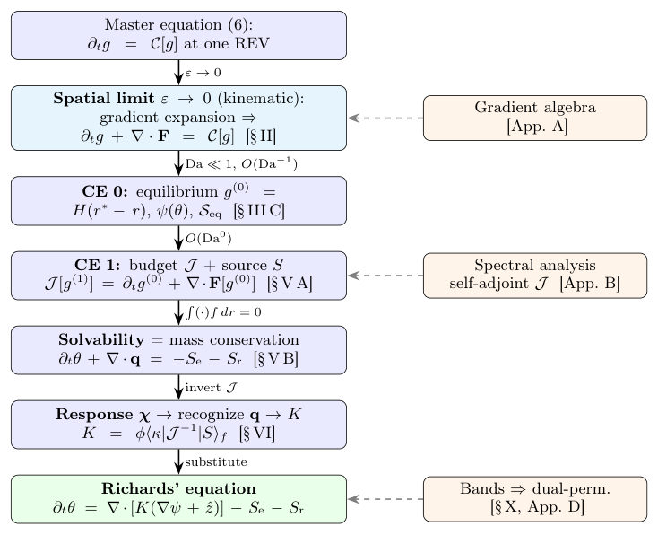
<figcaption class="paper-figure-caption"><b>Fig 1.</b> FIG. 1. The derivation, with the two limits kept separate. The spatial limit (cyan) is kinematic and produces the continuum kinetic equation; the Chapman–Enskog steps (blue) reduce it to Richards’ equation (green). Solid arrows: logical chain; dashed: supporting analysis. Finite-Da band structure branches to dual-/multiple-permeability.</figcaption>
</figure>
<figure class="paper-figure-card">
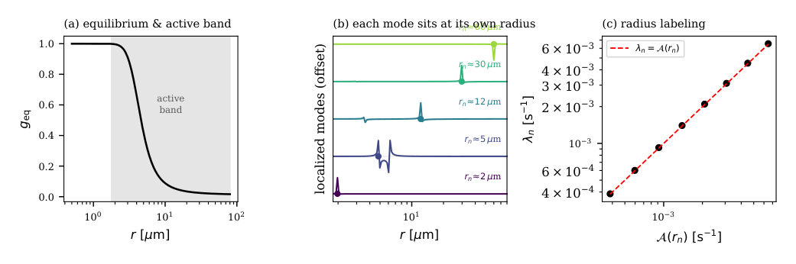
<figcaption class="paper-figure-caption"><b>Fig 2.</b> FIG. 2. The spectral structure behind the conductivity formula (60), computed for a representative log-normal loam (Sup- plemental Material, Sec. S1). (a) Equilibrium filling geq(r) and the active band of partially filled pore classes that carry the redistribution dynamics. (b) Five representative eigenmodes φn of the linearized operator J , offset vertically: each is localized on a single pore class (PRn = 1) and pinned to its own resonant radius rn, so the mode index carries a pore radius. (c) The resulting radius labeling λn ≃A(rn): each decay rate equals the local diagonal loss rate at that modes radius. The conductivity K = ϕ⟨κ|J −1|S⟩f resolves the source on this graded ladder,...</figcaption>
</figure>
</div>

<p><strong>Summary.</strong> This work provides a rigorous derivation of Richards' equation from a mesoscopic kinetic theory describing water flow in soil. It uses the Chapman-Enskog expansion to bridge the gap between microscopic pore dynamics and macroscopic continuum laws. Furthermore, it applies spectral analysis to derive advanced permeability models for structured media directly from connectivity properties.</p>
<p><strong>Why it may be interesting.</strong> While focused on porous media flow, the mathematical machinery—using spectral analysis (eigenvectors/eigenvalues) to decompose a complex operator into simpler, interacting subsystems (two bands)—is highly analogous to techniques used in quantum many-body physics for modeling coupled quantum systems or domain decomposition in QEC.</p>
<details>
<summary>Detailed structure</summary>
<p><strong>Main problem.</strong> The paper derives Richards' equation for unsaturated soil water flow by rigorously separating two limits—spatial and temporal—that are often conflated in standard macroscopic theories.</p>
<p><strong>Main result.</strong> It successfully derives the continuum balance (Richards' equation) from a mesoscopic kinetic description by applying a Chapman-Enskog reduction, providing first-principles derivations for permeability models like dual-permeability.</p>
<p><strong>Method.</strong> The core methodology involves performing a Chapman-Enskog expansion on a Continuum Kinetic Equation (CKE), which itself is obtained via a gradient expansion (spatial limit) of the pore-filling distribution dynamics.</p>
<p><strong>Model / system.</strong> The system models unsaturated soil water flow, governed by the evolution of the pore-filling distribution $g(r, x, t)$ within Representative Elementary Volumes (REVs). The analysis extends to bimodal distributions, allowing for spectral decomposition and domain reduction techniques.</p>
<p><strong>Key observables.</strong> Hydraulic Conductivity ($K$), Water Content ($    heta$), Retention Curve, Inter-domain Exchange Coefficient ($\Gamma_w$).</p>
<p><strong>Important parameters / regimes.</strong> Damköhler Number (Da), which controls the temporal separation; pore size distribution characteristics (e.g., bimodal gap).</p>
<p><strong>Assumptions / limitations.</strong> The primary assumptions are that the system can be reduced via a small Damköhler number expansion ($Da \ll 1$) and, in advanced sections, that spectral gaps exist to justify domain decomposition.</p>
<p><strong>Figures summary.</strong> Figures illustrate the derivation path from CKE $  o$ Richards' equation; spectral analysis shows eigenvalue gaps ($\lambda_1$) confirming the validity of two-domain reductions by showing rate ratios approaching unity as separation increases.</p>
<p><strong>Paper structure.</strong> The paper follows a multi-stage reduction: first, establishing the CKE via spatial limit; second, applying CE expansion in time to yield Richards' equation and identifying $K$; finally, using spectral theory on bimodal systems to derive inter-domain exchange coefficients from first principles.</p>
</details>
<details>
<summary>Abstract</summary>
<p>Richards' equation for unsaturated water flow is derived from the kinetic theory of the pore-filling distribution g(r,x,t) of a companion paper. It separates two limits that macroscopic theory usually conflates. The spatial limit is purely kinematic: contracting the representative elementary volume (REV) to a point yields the closed continuum kinetic equation (CKE) d_t g + div F = C[g], with F a pore-resolved pre-closure flux and C[g] the occupancy-gated redistribution operator. The dynamics lies in the temporal limit, the subject of this paper: a Chapman-Enskog (CE) reduction of the CKE controlled by the Damkohler number Da (redistribution time over forcing time), the structural analogue of the passage from Boltzmann to Navier-Stokes. The linearized redistribution operator J is self-adjoint and negative semidefinite in the mass inner product, with a one-dimensional kernel fixing a single invariant (water) and hence one macroscopic equation; the CE hierarchy inverts the same J at every order, only the source changing. Four results follow: the equilibrium step defines the retention curve; the linearized water budget plus the inter-REV source set the first-order equation; its solvability is mass conservation, i.e. Richards' equation; and the response function gives the macroscopic flux, identifying the conductivity K as a first-order transport coefficient, the counterpart of viscosity. Mean-field reduction recovers the standard integral formula; the serial-path correction gives Mualem's heterogeneity penalty. A bimodal pore-size distribution opens a gap in the relaxation spectrum; projecting onto the bands and applying CE within each, with cross-band relaxation surviving at O(1), derives the dual- and multiple-permeability models from first principles, the exchange coefficient set by inter-band connectivity. When Da is not small the expansion breaks down and the full CKE is needed.</p>
</details>
<p><sub><a href="#top">↑ back to top</a></sub></p>

<p><a id="paper-2607.17469"></a></p>
<h3 id="the-dimension-of-nonterminating-resampling-computations"><a href="http://arxiv.org/abs/2607.17469v1">The Dimension of Nonterminating Resampling Computations</a></h3>
<p><strong>Authors:</strong> Yunbei Xu<br>
<strong>Type:</strong> theory · <strong>Category:</strong> statistical mechanics · <strong>PDF:</strong> <a href="https://arxiv.org/pdf/2607.17469v1">https://arxiv.org/pdf/2607.17469v1</a><br>
<strong>Analysis basis:</strong> full PDF text, analyzed in chunks
<strong>Topic relevance:</strong> <code>entanglement &amp; information structure</code> <strong>2/5</strong> · <code>non-equilibrium dynamics</code> <strong>2/5</strong> · <code>non-equilibrium universality</code> <strong>2/5</strong> · <code>Keldysh / 2PI / non-Gaussian methods</code> <strong>1/5</strong> · <code>correlated / nonlocal dissipation</code> <strong>1/5</strong> · <code>driven-dissipative phase transition</code> <strong>1/5</strong> · <code>methods for driven-dissipative</code> <strong>1/5</strong></p>
<div class="figure-strip-hint">↔ Scroll figures horizontally</div>
<div class="paper-figures-scroll">
<figure class="paper-figure-card">
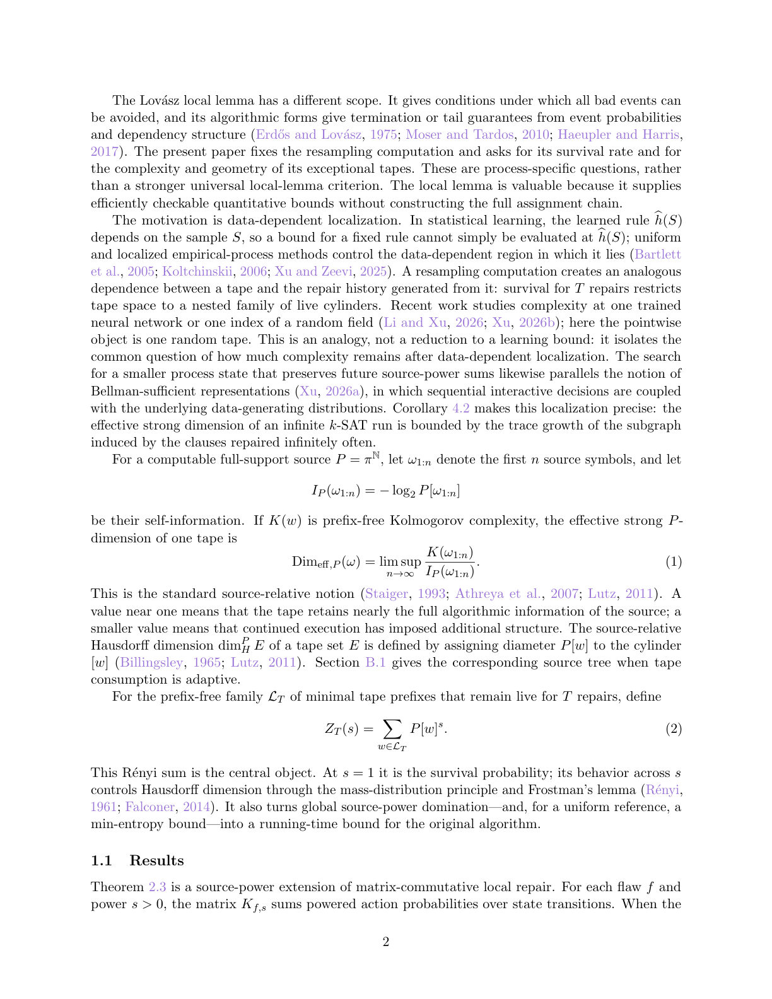
<figcaption class="paper-figure-caption"><b>Fig 1.</b> Low-resolution page preview, page 2</figcaption>
</figure>
<figure class="paper-figure-card">
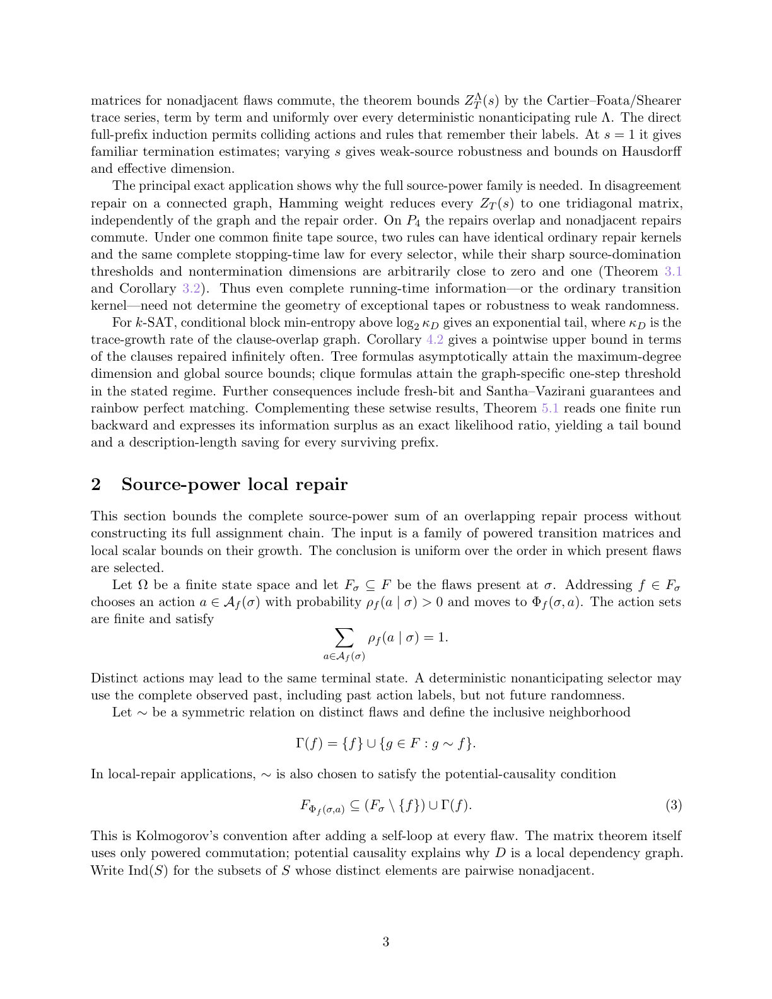
<figcaption class="paper-figure-caption"><b>Fig 2.</b> Low-resolution page preview, page 3</figcaption>
</figure>
<figure class="paper-figure-card">
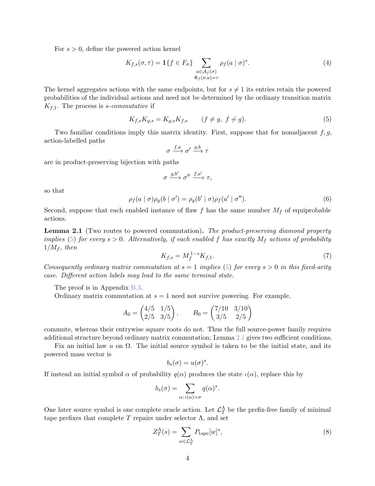
<figcaption class="paper-figure-caption"><b>Fig 3.</b> Low-resolution page preview, page 4</figcaption>
</figure>
<figure class="paper-figure-card">
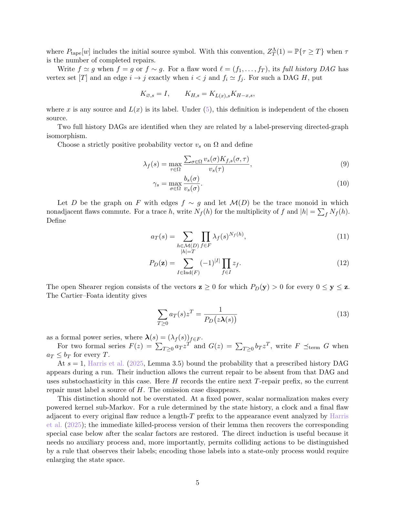
<figcaption class="paper-figure-caption"><b>Fig 4.</b> Low-resolution page preview, page 5</figcaption>
</figure>
<figure class="paper-figure-card">
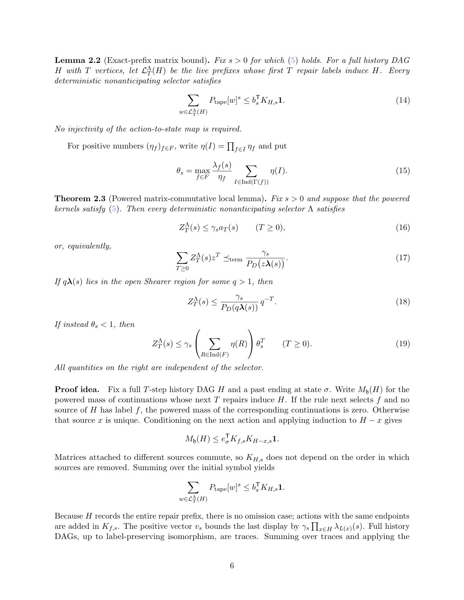
<figcaption class="paper-figure-caption"><b>Fig 5.</b> Low-resolution page preview, page 6</figcaption>
</figure>
</div>

<p><strong>Summary.</strong> This paper rigorously analyzes the mathematical properties—specifically the Hausdorff dimension and survival tail—of computational histories that run forever despite being almost surely terminating. It achieves this by developing powerful bounds on source-power sums using matrix theory, demonstrating how subtle differences in local rules can lead to vastly different global nontermination behaviors.</p>
<p><strong>Why it may be interesting.</strong> While highly abstract, the rigorous mathematical framework developed for bounding complexity and dimension in infinite random processes has parallels with analyzing long-time behavior or rare events in non-equilibrium statistical mechanics systems.</p>
<details>
<summary>Detailed structure</summary>
<p><strong>Main problem.</strong> The paper studies the survival tail, Kolmogorov complexity, and Hausdorff dimension of exceptional random tapes for randomized algorithms that are guaranteed to terminate almost surely.</p>
<p><strong>Main result.</strong> It establishes bounds on source-power sums ($Z_{\Lambda}^T(s)$) using matrix commutation properties, showing that nontermination dimensions can differ drastically even when ordinary kernels match.</p>
<p><strong>Method.</strong> The analysis employs advanced tools from information theory and probability, including Rényi entropy sums, powered action matrices, and dimension calculations derived from source-power bounds.</p>
<p><strong>Model / system.</strong> The model is a randomized computation process defined by a source law $P$ on the tape $\omega$, focusing on the set of tapes where the repair process never stops ($   au(\omega) = \infty$).</p>
<p><strong>Key observables.</strong> Survival tail ($P\{	au \geq T\}$), Source-power sum ($Z_{\Lambda}^T(s)$), Effective dimension ($  ext{Dimeff},_P(\omega)$), and Hausdorff dimension.</p>
<p><strong>Important parameters / regimes.</strong> The exponent $s$ (where $s=1$ controls termination) and structural parameters related to the underlying computation graph or source law are critical.</p>
<p><strong>Assumptions / limitations.</strong> The analysis requires specific structural conditions, such as powered action matrices commuting for certain values of $s$, and relies on definitions involving 'source-power domination'.</p>
<p><strong>Figures summary.</strong> Not specified in the notes; the focus is on mathematical theorems and derived bounds.</p>
<p><strong>Paper structure.</strong> The paper develops results by first defining the survival tail and source-power sums, then using matrix commutation properties (Theorem 2.3) to bound these sums for various $s$. It applies these general tools to specific problems like k-SAT and provides exact likelihood ratio identities for finite runs.</p>
</details>
<details>
<summary>Abstract</summary>
<p>A randomized algorithm may terminate almost surely even though exceptional random tapes make it run forever. This paper studies the survival tail, the Kolmogorov complexity of one such tape, and the Hausdorff dimension of all of them. For each $s>0$ at which the powered repair matrices commute, the main theorem bounds $\sum_wP[w]^s$ over surviving prefixes $w$, uniformly over deterministic nonanticipating selectors. The case $s=1$ controls termination; the full family gives weak-source and dimension bounds.   The source powers contain information absent even from the ordinary repair kernel and the complete stopping-time law. Under one common finite tape source, two overlapping disagreement-repair rules on a four-vertex path have the same ordinary kernels and the same stopping-time law for every selector, yet their nontermination dimensions can be arbitrarily close to zero and one. At one common source-power level, the same dominated tape source makes one rule run forever but gives the other an exponential stopping tail. The separation is caused by action labels that produce the same state transition and are therefore invisible at power one. For bounded-dependence $k$-SAT, conditional block min-entropy above the trace-growth threshold gives exponential termination, and the effective dimension of an individual infinite run is bounded by the trace growth induced by the clauses repaired infinitely often. Tree formulas asymptotically attain the maximum-degree dimension and global source bounds, while clique formulas attain the graph-specific one-step threshold in the stated regime. An exact backward likelihood identity complements these setwise results with tail and coding bounds for each run.</p>
</details>
<p><sub><a href="#top">↑ back to top</a></sub></p>

<p><a id="paper-2607.16701"></a></p>
<h3 id="quantum-metrological-detection-of-the-unruh-effect-with-optimized-accelerated-two-level-atoms"><a href="http://arxiv.org/abs/2607.16701v1">Quantum Metrological Detection of the Unruh Effect with Optimized Accelerated Two-Level Atoms</a></h3>
<p><strong>Authors:</strong> Yao Jin<br>
<strong>Type:</strong> theory · <strong>Category:</strong> other · <strong>PDF:</strong> <a href="https://arxiv.org/pdf/2607.16701v1">https://arxiv.org/pdf/2607.16701v1</a><br>
<strong>Analysis basis:</strong> full PDF text, analyzed in chunks
<strong>Topic relevance:</strong> <code>quantum measurements</code> <strong>2/5</strong> · <code>Keldysh / 2PI / non-Gaussian methods</code> <strong>1/5</strong> · <code>analog quantum simulation</code> <strong>1/5</strong> · <code>correlated / nonlocal dissipation</code> <strong>1/5</strong> · <code>driven-dissipative phase transition</code> <strong>1/5</strong> · <code>entanglement &amp; information structure</code> <strong>1/5</strong> · <code>methods for driven-dissipative</code> <strong>1/5</strong> · <code>non-equilibrium dynamics</code> <strong>1/5</strong></p>
<div class="figure-strip-hint">↔ Scroll figures horizontally</div>
<div class="paper-figures-scroll">
<figure class="paper-figure-card">
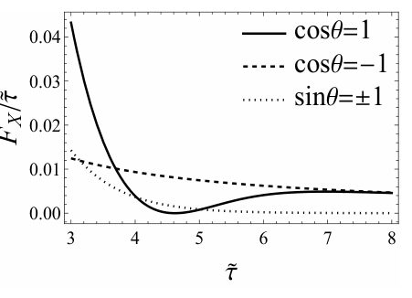
<figcaption class="paper-figure-caption"><b>Fig 1.</b> FIG. 1: FX/eτ as a function of eτ in cases with initial states cos θ = 1, cos θ = −1 and</figcaption>
</figure>
<figure class="paper-figure-card">
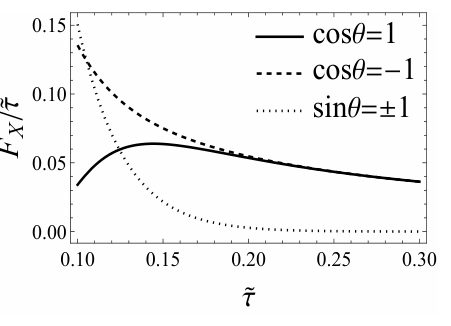
<figcaption class="paper-figure-caption"><b>Fig 2.</b> FIG. 2: FX/eτ as a function of eτ in cases with initial states cos θ = 1, cos θ = −1 and</figcaption>
</figure>
<figure class="paper-figure-card">
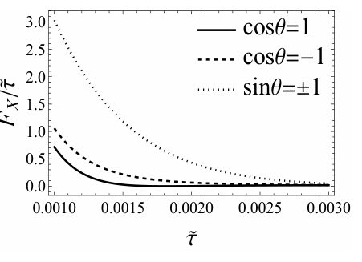
<figcaption class="paper-figure-caption"><b>Fig 3.</b> FIG. 3: FX/eτ as a function of eτ in cases with initial states cos θ = 1, cos θ = −1 and</figcaption>
</figure>
<figure class="paper-figure-card">
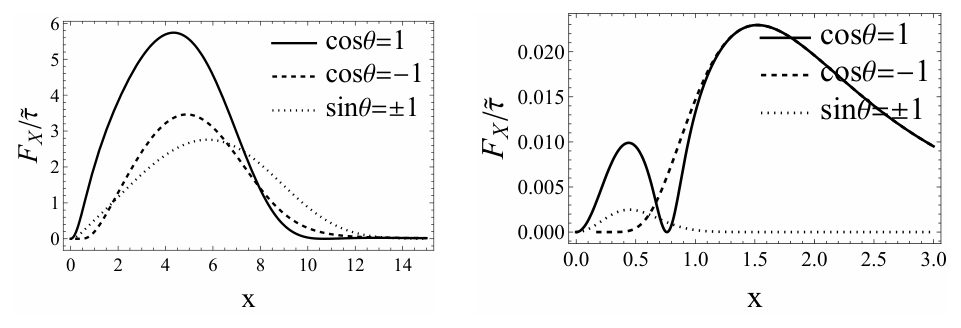
<figcaption class="paper-figure-caption"><b>Fig 4.</b> FIG. 4: FX/eτ as a function of X for initial states cos θ = 1, cos θ = −1, and sin θ = ±1,</figcaption>
</figure>
</div>

<p><strong>Summary.</strong> The paper develops a theoretical framework to detect the Unruh effect by measuring acceleration-dependent effects on an atom. It optimizes measurement parameters—including probe time and initial state—to minimize the uncertainty in estimating the acceleration factor. The results show that careful optimization can significantly reduce the required experimental time, suggesting feasibility with advanced atomic systems.</p>
<p><strong>Why it may be interesting.</strong> This work provides a detailed roadmap for experimental verification of fundamental QFT predictions (Unruh effect) using controllable quantum systems like trapped atoms, combining advanced concepts from open quantum systems and metrology.</p>
<details>
<summary>Detailed structure</summary>
<p><strong>Main problem.</strong> The paper addresses the quantum metrological detection of the Unruh effect, which involves verifying acceleration-dependent modifications predicted by quantum field theory for uniformly accelerated observers.</p>
<p><strong>Main result.</strong> The minimal uncertainty in estimating the acceleration factor can be significantly reduced by optimizing the individual probe interaction time and utilizing atoms with larger transition dipole moments. The optimal initial state depends critically on whether the acceleration is small or large.</p>
<p><strong>Method.</strong> Quantum metrology principles are applied to bound the estimation uncertainty using the Fisher information, requiring optimization over the probe evolution time, initial atomic state, and measurement basis.</p>
<p><strong>Model / system.</strong> The system involves a two-level probe atom coupled to the vacuum electromagnetic field while undergoing uniform acceleration. The dynamics are modeled using an effective Hamiltonian derived from the multipolar coupling scheme.</p>
<p><strong>Key observables.</strong> Minimal estimation uncertainty ($  ext{Var}(X)$) of the acceleration factor ($X = a/(c\omega_0)$), and the Fisher information ($F_X$).</p>
<p><strong>Important parameters / regimes.</strong> Acceleration factor $X$, individual probe evolution time $ au$, total probe time $T$, initial atomic state parameters ($\cos	heta, \sin	heta$), and transition dipole moments.</p>
<p><strong>Assumptions / limitations.</strong> The analysis assumes the electromagnetic field is initially in a vacuum state (inertial observer frame) and utilizes weak coupling approximations for the density matrix evolution.</p>
<p><strong>Figures summary.</strong> Figures 1-3 show optimized quantities ($F_X/\epsilon_	au$) versus $\epsilon_	au^{-1}$ for various initial states at fixed accelerations. Figure 4 shows this ratio dependence on $X$ for fixed probe times, illustrating optimal parameter choices.</p>
<p><strong>Paper structure.</strong> The paper first establishes the theoretical framework using quantum metrology bounds and then systematically optimizes the estimation uncertainty by varying the individual probe time ($  au$), initial state, and measurement basis across different acceleration regimes ($X=0.8, 5, 20$).</p>
</details>
<details>
<summary>Abstract</summary>
<p>For a uniformly accelerated two-level probe atom, the acceleration-dependent factor is encoded in the atomic state during the atom-field evolution. If this factor can be estimated through a large number of measurements with an uncertainty smaller than its magnitude, the Unruh effect can be experimentally verified. In this work, we show that the minimal uncertainty is inversely proportional to the square root of the total probe time. For a fixed total probe time, we minimize the estimation uncertainty by optimizing the atom-field interaction time, the initial atomic state, and the measurement basis in each probe. Results show that the uncertainty decreases as the evolution time of each individual probe becomes shorter. The optimal measurement basis is determined by the initial atomic state, while the optimal initial state depends on both the acceleration factor and the evolution time of each probe. For a fixed evolution time, we analyze the estimation uncertainty versus the acceleration factor and identify the optimal factor and minimal uncertainty for each initial state. The initial excited state outperforms other configurations in the small-acceleration regime, whereas the ground state can become advantageous for sufficiently large acceleration and long evolution time of each probe. Finally, we estimate the minimal total probe time required for testing the Unruh effect and demonstrate that it can be significantly reduced by using probe atoms with larger transition dipole moments.</p>
</details>
<p><sub><a href="#top">↑ back to top</a></sub></p>

<p><a id="paper-2607.17234"></a></p>
<h3 id="statistical-mechanics-of-a-three-body-hopfield-model-with-finite-connectivity"><a href="http://arxiv.org/abs/2607.17234v1">Statistical-mechanics of a three-body Hopfield model with finite connectivity</a></h3>
<p><strong>Authors:</strong> Yushi Sugawara, Koji Hukushima<br>
<strong>Type:</strong> theory · <strong>Category:</strong> disordered systems and neural networks · <strong>PDF:</strong> <a href="https://arxiv.org/pdf/2607.17234v1">https://arxiv.org/pdf/2607.17234v1</a><br>
<strong>Analysis basis:</strong> full PDF text, analyzed in chunks
<strong>Topic relevance:</strong> <code>Keldysh / 2PI / non-Gaussian methods</code> <strong>2/5</strong> · <code>analog quantum simulation</code> <strong>1/5</strong> · <code>driven-dissipative phase transition</code> <strong>1/5</strong> · <code>entanglement &amp; information structure</code> <strong>1/5</strong> · <code>exotic spin models in light-matter</code> <strong>1/5</strong> · <code>methods for driven-dissipative</code> <strong>1/5</strong> · <code>non-equilibrium dynamics</code> <strong>1/5</strong> · <code>non-equilibrium universality</code> <strong>1/5</strong></p>
<div class="figure-strip-hint">↔ Scroll figures horizontally</div>
<div class="paper-figures-scroll">
<figure class="paper-figure-card">
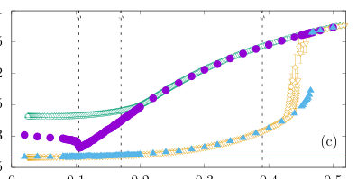
<figcaption class="paper-figure-caption"><b>Fig 1.</b> FIG. 1. Temperature dependence of the macroscopic quanti- ties for the three-body sparse Hopfield model with c = 10 and P = 2 (α = 0.2). The panels display, from top to bottom, the overlap magnetization mµ, the spin-glass (SG) order param- eter q, and the internal energy density e. The filled symbols represent the replica-symmetric (RS) solutions obtained by population dynamics initialized from the paramagnetic state (circles) and the ordered retrieval state (triangles). For com- parison, microscopic simulation results obtained via popula- tion annealing (PA) for finite system sizes (N = 1024 and N = 2048) are plotted for both the cooling (open circles) and heating (open triangles)...</figcaption>
</figure>
<figure class="paper-figure-card">
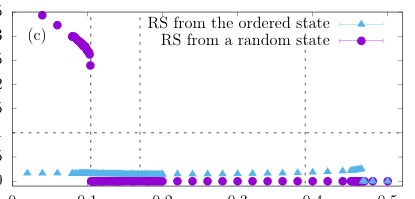
<figcaption class="paper-figure-caption"><b>Fig 2.</b> FIG. 2. Temperature dependence of the thermodynamic quantities obtained from the replica-symmetric (RS) popu- lation dynamics for the three-body sparse Hopfield model with c = 10 and P = 2. The three panels display, from top to bottom, the free energy density fRS, the entropy density eRS −fRS = TsRS, and the local stability measure λAT. The filled symbols represent the RS solutions initialized from the paramagnetic state (circles) and the ordered retrieval state (triangles). The vertical dashed lines indicate, from left to right, T RS SG , Ts=0 and Tc, where T RS SG is the onset tempera- ture of the RS SG fixed point, Ts=0 is the temperature below which the RS entropy becomes negative, and...</figcaption>
</figure>
<figure class="paper-figure-card">
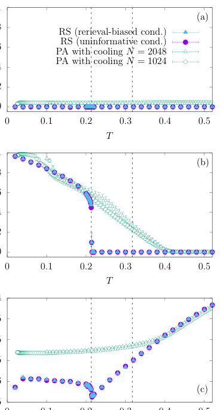
<figcaption class="paper-figure-caption"><b>Fig 3.</b> FIG. 3. Temperature dependence of the macroscopic quanti- ties for the three-body sparse Hopfield model with c = 10 and P = 8 (α = 0.8). The panels display, from top to bottom, the overlap magnetization mµ, the spin-glass (SG) order param- eter q, and the internal energy density e. The filled symbols denote the replica-symmetric (RS) solution, while the open symbols represent the microscopic PA simulation results for comparison. The vertical lines represent, from left to right, T RS SG and Ts=0.</figcaption>
</figure>
<figure class="paper-figure-card">
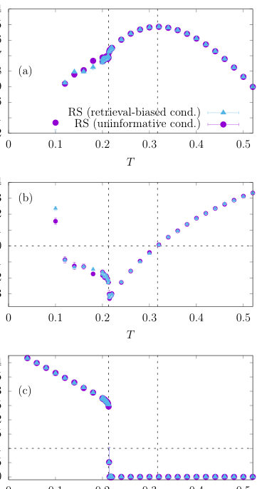
<figcaption class="paper-figure-caption"><b>Fig 4.</b> FIG. 4. Temperature dependence of the thermodynamic quantities obtained from the replica-symmetric (RS) popula- tion dynamics for the three-body sparse Hopfield model with c = 10 and P = 8. The panels display, from top to bottom, the free-energy density fRS, the entropy density sRS, and the local stability measure λAT. The vertical lines represent, from left to right, T RS SG and Ts=0.</figcaption>
</figure>
<figure class="paper-figure-card">
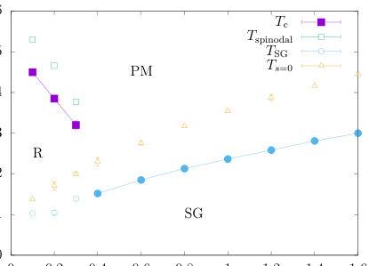
<figcaption class="paper-figure-caption"><b>Fig 5.</b> FIG. 5. Phase diagram of the three-body sparse Hopfield model for fixed mean connectivity c = 10 on the α −T plane. The filled squares denote the first-order transition temper- ature Tc between the paramagnetic (PM) and retrieval (R) phases. The open squares indicate the upper spinodal tem- perature Tspinodal of the retrieval state. The circles represent the spin-glass (SG) transition temperature TSG, at which a nontrivial SG solution appears in the PD analysis. The open triangles show the temperature Ts=0 at which the entropy of the RS solution becomes negative, indicating the breakdown of the RS description of the glassy branch.</figcaption>
</figure>
</div>

<p><strong>Summary.</strong> This paper analyzes a three-body Hopfield model on sparse random graphs using advanced replica methods. It finds that three-body interactions fundamentally alter the memory retrieval process, causing discontinuous transitions and robust glassy trapping behavior. The work clarifies how both many-body complexity and graph sparsity govern the system's storage capacity.</p>
<p><strong>Why it may be interesting.</strong> While focused on classical neural networks, the analysis of phase transitions, glassy dynamics, and mean-field approximations in disordered systems provides methodological parallels to understanding complex quantum many-body ground states or optimization problems in quantum computing.</p>
<details>
<summary>Detailed structure</summary>
<p><strong>Main problem.</strong> The study investigates the statistical mechanics of a three-body Hopfield model defined on sparse random graphs with finite mean connectivity.</p>
<p><strong>Main result.</strong> Three-body interactions induce a discontinuous retrieval transition, leading to a spin-glass-like trapping mechanism at low temperatures that is distinct from conventional two-body models.</p>
<p><strong>Method.</strong> The analysis employs the replica-symmetric (RS) functional framework combined with Population Dynamics (PD) for self-consistent equation solving, complemented by finite-size Monte Carlo simulations.</p>
<p><strong>Model / system.</strong> The model is a three-body Hopfield network described by a Hamiltonian involving three-spin couplings ($J_{ijk}$) on sparse random graphs. The system's behavior is characterized by the interplay between many-body interactions and graph disorder.</p>
<p><strong>Key observables.</strong> Local-field distribution $W_\xi(h)$, retrieval order parameter, spin-glass overlap $q$, and characteristic storage load $\alpha$.</p>
<p><strong>Important parameters / regimes.</strong> Mean connectivity ($c=O(1)$), number of patterns ($P$), normalized load ($\alpha = P/c$), and temperature/inverse temperature ($eta$).</p>
<p><strong>Assumptions / limitations.</strong> The primary analytical tool relies on the Replica Symmetric (RS) ansatz, which is acknowledged to break down in the low-temperature glassy regime.</p>
<p><strong>Figures summary.</strong> Figure 6 illustrates the mean-connectivity dependence of critical load parameters ($\alpha_1$ and $\alpha_2$), showing that storage capacity scales linearly with connectivity ($P \propto c$).</p>
<p><strong>Paper structure.</strong> The paper follows a structure: model introduction, free energy evaluation via replica method using functional integrals, solving self-consistent equations via Population Dynamics (PD), comparison with Monte Carlo simulations, and final discussion on the implications of many-body effects.</p>
</details>
<details>
<summary>Abstract</summary>
<p>A three-body Hopfield model defined on sparse random graphs with finite mean connectivity is studied using a replica-symmetric (RS) analysis. By extending the functional replica framework for conventional two-body finite-connectivity Hopfield models, self-consistent equations for the local-field distribution are derived and solved numerically by population dynamics. In contrast to two-body sparse Hopfield models, three-body interactions induce a discontinuous retrieval transition, coexistence of paramagnetic and retrieval solutions, and a distinct spinodal structure. Starting the RS population dynamics from an uninformative finite-amplitude field distribution leads to a spin-glass-like fixed point at low temperatures rather than to the retrieval state. This trapping already occurs for a single embedded pattern, where conventional cross-talk noise among stored patterns is absent, indicating that it originates from the combination of sparse connectivity and three-body interactions. Within the RS description, increasing the number of embedded patterns drives a crossing between the retrieval and glassy free-energy branches, making the glassy branch thermodynamically stable at high load. Finite-size Monte Carlo simulations using population annealing support the RS description of the retrieval branch and reproduce the trapping behavior under cooling, while deviations from the RS spin-glass branch point to replica-symmetry breaking in the low-temperature glassy regime. The characteristic storage load scales linearly with the mean connectivity, reflecting the sparse number of couplings. These results clarify how many-body discontinuity and sparse graph disorder simultaneously influence the accessibility and capacity of associative memory.</p>
</details>
<p><sub><a href="#top">↑ back to top</a></sub></p>

<p><a id="paper-2607.17239"></a></p>
<h3 id="adverse-selection-with-quality-variance-a-maximum-entropy-approach"><a href="http://arxiv.org/abs/2607.17239v1">Adverse Selection with Quality Variance: A Maximum-Entropy Approach</a></h3>
<p><strong>Authors:</strong> Zhi-Lei Zhang, Tan-Ji Zhou, C. P. Sun<br>
<strong>Type:</strong> theory · <strong>Category:</strong> statistical mechanics · <strong>PDF:</strong> <a href="https://arxiv.org/pdf/2607.17239v1">https://arxiv.org/pdf/2607.17239v1</a><br>
<strong>Analysis basis:</strong> full PDF text, analyzed in chunks
<strong>Topic relevance:</strong> <code>non-equilibrium dynamics</code> <strong>2/5</strong> · <code>non-equilibrium universality</code> <strong>2/5</strong> · <code>Keldysh / 2PI / non-Gaussian methods</code> <strong>1/5</strong> · <code>correlated / nonlocal dissipation</code> <strong>1/5</strong> · <code>driven-dissipative phase transition</code> <strong>1/5</strong> · <code>methods for driven-dissipative</code> <strong>1/5</strong></p>
<div class="figure-strip-hint">↔ Scroll figures horizontally</div>
<div class="paper-figures-scroll">
<figure class="paper-figure-card">
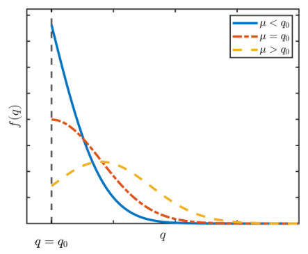
<figcaption class="paper-figure-caption"><b>Fig 1.</b> Figure 1: Truncated-Gaussian benchmark distributions for different positions of 𝜇relative to the minimum quality floor 𝑞0. The three cases show how the local mass near the floor changes when the same support is used.</figcaption>
</figure>
<figure class="paper-figure-card">
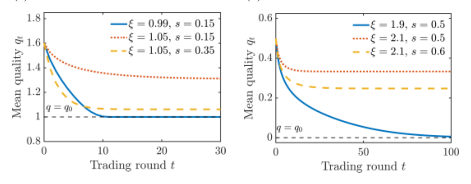
<figcaption class="paper-figure-caption"><b>Fig 2.</b> Figure 2: Mean-quality dynamics under the truncated-Gaussian benchmark. Panel (a) shows the case with a positive minimum quality floor, 𝑞0 = 1, initial mean quality ̄𝑞0 = 1.60. Panel (b) shows the case without a positive floor, 𝑞0 = 0, initial mean quality ̄𝑞0 = 0.50.</figcaption>
</figure>
</div>

<p><strong>Summary.</strong> This paper develops a statistical approach to model adverse selection, treating market quality deterioration as a dynamic truncation of the underlying quality distribution. It determines critical conditions based on buyer payment rates and initial quality variance required to prevent the market from collapsing entirely. The findings offer insights into how interventions can stabilize imperfect markets.</p>
<p><strong>Why it may be interesting.</strong> While applied to economics, the mathematical framework of sequential conditional distribution updates and stability analysis under constraints (truncation) shares formal parallels with non-equilibrium statistical mechanics models involving filtering or boundary effects in quantum systems.</p>
<details>
<summary>Detailed structure</summary>
<p><strong>Main problem.</strong> The paper analyzes adverse selection in markets driven by asymmetric information, which causes market deterioration by eliminating high-quality goods.</p>
<p><strong>Main result.</strong> It establishes conditions (related to the payment rate $\xi$ and minimum quality floor $q_0$) necessary to prevent complete market collapse, showing that variance and price premium jointly determine the speed of deterioration.</p>
<p><strong>Method.</strong> The analysis models the process as a dynamic truncation of the underlying quality distribution, using recursion relations derived from conditional probability distributions.</p>
<p><strong>Model / system.</strong> The system is an economic model where buyers set an upper bound ($b_t = \xi ar{q}_t$) on payment, causing sellers with quality $q > b_t$ to exit. The market state evolves by retaining the conditional distribution of quality.</p>
<p><strong>Key observables.</strong> Mean market quality ($ar{q}_t$), retained-market variance ($\sigma^2_{t+1}$), and the price premium ($a_t$).</p>
<p><strong>Important parameters / regimes.</strong> The payment rate $\xi$, the underlying quality variance parameter ($s^2$), and the minimum quality floor ($q_0$).</p>
<p><strong>Assumptions / limitations.</strong> The market deterioration path is assumed to be monotone ($ar{q}_{t+1} < ar{q}_t$); the analysis uses maximum-entropy principles for benchmark distributions.</p>
<p><strong>Figures summary.</strong> Figures illustrate mean-quality dynamics showing convergence to a stable platform when $\xi > \xi_c$, and demonstrate market collapse versus avoidance based on whether a positive floor exists (comparing $\xi < 2$ vs. $\xi > 2$).</p>
<p><strong>Paper structure.</strong> The paper first defines the dynamic truncation process, derives bounds on mean quality decline using variance and price premium, then uses maximum-entropy methods to find benchmark distributions, and finally discusses implications for market interventions.</p>
</details>
<details>
<summary>Abstract</summary>
<p>The adverse-selection mechanism in markets explains how asymmetric information between buyers and sellers can drive high-quality goods out of the market, thereby causing market deterioration. In its simplest formulation, only the mean quality is used to describe the market, and this is insufficient to determine how fast the market deteriorates or how the quality distribution evolves. To resolve the two problems, we describe the adverse selection as a dynamic truncation of the quality distribution: buyers set an upper bound proportional to the mean quality by a rate $ξ$ that is larger than unity, and sellers whose quality exceeds this upper bound reject an offer and exit the market. The retained market is then characterized by the conditional distribution obtained after this truncation, and the corresponding evolution process is iterated until market quality reaches a stable state. This statistical approach gives three results. (i) We identify a mechanism for preventing complete adverse selection, defined as the process where the quality of the market is driven down to the minimum quality floor. (ii) A larger quality variance or a smaller price premium, defined as the amount by which the payment upper bound exceeds the current mean quality, raises the upper bound on the deterioration in mean quality. (iii) A maximum-entropy benchmark shows numerically how quality variance and the payment rate jointly determine market deterioration and the final stable quality platform. This approach also clarifies how market interventions can slow adverse selection: they may raise buyers' payment rate, reduce quality variance, or increase the minimum quality floor.</p>
</details>
<p><sub><a href="#top">↑ back to top</a></sub></p>

<p><a id="paper-2607.18113"></a></p>
<h3 id="exponential-reduction-of-mesh-dependence-in-quantum-estimation-of-parabolic-pde-observables"><a href="http://arxiv.org/abs/2607.18113v1">Exponential Reduction of Mesh Dependence in Quantum Estimation of Parabolic PDE Observables</a></h3>
<p><strong>Authors:</strong> Xiantao Li<br>
<strong>Type:</strong> theory · <strong>Category:</strong> quantum information and computing · <strong>PDF:</strong> <a href="https://arxiv.org/pdf/2607.18113v1">https://arxiv.org/pdf/2607.18113v1</a><br>
<strong>Analysis basis:</strong> full PDF text, analyzed in chunks
<strong>Topic relevance:</strong> <code>analog quantum simulation</code> <strong>2/5</strong> · <code>non-equilibrium dynamics</code> <strong>2/5</strong> · <code>Keldysh / 2PI / non-Gaussian methods</code> <strong>1/5</strong> · <code>correlated / nonlocal dissipation</code> <strong>1/5</strong> · <code>driven-dissipative phase transition</code> <strong>1/5</strong> · <code>methods for driven-dissipative</code> <strong>1/5</strong></p>
<div class="figure-strip-hint">↔ Scroll figures horizontally</div>
<div class="paper-figures-scroll">
<figure class="paper-figure-card">
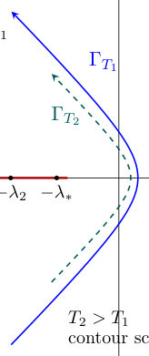
<figcaption class="paper-figure-caption"><b>Fig 1.</b> Figure 1: Schematic hyperbolic contours for the inverse-Laplace representation. The contour ΓT intersects the positive real axis and its tails extend into the second and third quadrants. Increasing the target time contracts the contour by the factor T −1.</figcaption>
</figure>
</div>

<p><strong>Summary.</strong> The paper presents a novel multilevel quantum algorithm to estimate observables derived from parabolic Partial Differential Equations. It successfully overcomes the major bottleneck of classical and direct quantum methods: the polynomial dependence on the fine spatial mesh size ($h^{-1}$). By coherently encoding fine-to-coarse level differences, it achieves an exponential reduction in complexity with respect to $h^{-1}$.</p>
<p><strong>Why it may be interesting.</strong> This work directly addresses simulating time evolution governed by PDEs (like heat diffusion) on quantum hardware, which is crucial for modeling open quantum systems or thermalization processes in condensed matter theory.</p>
<details>
<summary>Detailed structure</summary>
<p><strong>Main problem.</strong> To develop a quantum algorithm that estimates observables related to Parabolic PDEs without incurring a computational cost polynomial in the inverse of the spatial mesh size ($h^{-1}$).</p>
<p><strong>Main result.</strong> A multilevel quantum algorithm is developed that achieves an end-to-end complexity independent of the finest mesh size, scaling as $\widetilde{\mathcal O}(1+(T\epsilon)^{-1})$ with only polylogarithmic dependence on $h^{-1}$.</p>
<p><strong>Method.</strong> The core technique involves using a multilevel estimator based on encoding the fine–coarse cancellation within a shifted Ritz–Schur factorization to avoid direct block encoding of high-resolution operators.</p>
<p><strong>Model / system.</strong> The model is the heat equation ($\partial_t u + L u = 0$) solved via finite element discretization, leading to a semi-discrete linear ODE system $\dot{\mathbf{y}}_h = -L_h \mathbf{y}_h$. The analysis covers both direct semigroup estimation and multilevel correction.</p>
<p><strong>Key observables.</strong> Linear and quadratic observables of the solution operator, such as regional average heat content or local mass flux ($\chi=0, 1, 2$).</p>
<p><strong>Important parameters / regimes.</strong> Target time $T$, desired accuracy $\epsilon$, and mesh size $h$. The complexity is shown to be independent of readout order $\chi$ for low-order derivatives.</p>
<p><strong>Assumptions / limitations.</strong> The method relies on specific access assumptions regarding the block encoding of shifted Ritz maps, and the analysis uses Galerkin approximation theory results for error bounding.</p>
<p><strong>Figures summary.</strong> Not specified in the notes; the structure is based on comparing complexity costs across different estimation methods (LMS vs. direct semigroup vs. corrected-resolvent).</p>
<p><strong>Paper structure.</strong> The paper first establishes the problem of mesh dependence in quantum PDE algorithms, then introduces and analyzes a multilevel estimator using shifted Ritz–Schur factorization to coherently place fine–coarse cancellation before measurement.</p>
</details>
<details>
<summary>Abstract</summary>
<p>Can a quantum PDE algorithm avoid the polynomial cost of resolving a fine spatial mesh? For standard fixed-order discretizations, direct classical methods require work polynomial in $h^{-1}$, or equivalently in the number of spatial degrees of freedom $N_h=Θ(h^{-d})$. Direct quantum implementations of a parabolic semigroup still have coherent complexity $\widetilde{\mathcal O}(\sqrt{T}/h)$, and gradient-dependent observables such as heat flux and dissipation introduce additional mesh dependence. Decay of the solution norm will further suppress the postselection probability for preparing a normalized final state.   We develop a multilevel quantum algorithm that estimates linear and quadratic observables $directly$ and places the fine--coarse cancellation inside the circuit before measurement. A contour-based LCU reconstructs each target-time correction from a coherent family of shifted resolvent differences. Rather than block encoding the fine and coarse inverses separately, we encode their difference through a shifted Ritz--Schur factorization, exposing its $\mathcal O(h_\ell^2)$ two-grid normalization. For Fourier hierarchies, the corresponding SELECT oracle consists of a quantum Fourier or sine transform, a spectral-band selector, and reversible diagonal arithmetic. We also give a non-Fourier realization based on energy-orthogonal dyadic midpoint details in one dimension, together with structured tensor-product extensions under fixed-rank coefficient and access assumptions.   For readouts with derivative order $0\leχ\le2$, optimized amplitude estimation removes $all$ polynomial dependence on the finest mesh size. Under the stated access assumptions, both linear and quadratic observables can be estimated with complexity $\widetilde{\mathcal O}(1+(Tε)^{-1})$, with only polylogarithmic dependence on $h^{-1}$.</p>
</details>
<p><sub><a href="#top">↑ back to top</a></sub></p>

<p><a id="paper-2607.18059"></a></p>
<h3 id="foundry-cmos-platform-for-multimodal-quantum-materials-characterization"><a href="http://arxiv.org/abs/2607.18059v1">Foundry CMOS platform for multimodal quantum materials characterization</a></h3>
<p><strong>Authors:</strong> Sharad Kumar Yadav, Luca Nessi, Ondrej Dyck, Jinchen Wang, Bogdan Dryzhakov, Alex Melendez, Huan Zhao, Qian Song, Doha Amer, Cole Brabec, Saleh Alqazlan, Ruonan Han, Riccardo Comin, Stephen Jesse, Dirk Englund, Jawaher Almutlaq<br>
<strong>Type:</strong> experiment · <strong>Category:</strong> other · <strong>PDF:</strong> <a href="https://arxiv.org/pdf/2607.18059v1">https://arxiv.org/pdf/2607.18059v1</a><br>
<strong>Analysis basis:</strong> full PDF text, analyzed in chunks
<strong>Topic relevance:</strong> <code>QC/QI experiment</code> <strong>2/5</strong> · <code>quantum measurements</code> <strong>2/5</strong> · <code>analog quantum simulation</code> <strong>1/5</strong> · <code>measurement-induced transitions</code> <strong>1/5</strong> · <code>spintronics-quantum-optics interface</code> <strong>1/5</strong></p>
<div class="figure-strip-hint">↔ Scroll figures horizontally</div>
<div class="paper-figures-scroll">
<figure class="paper-figure-card">
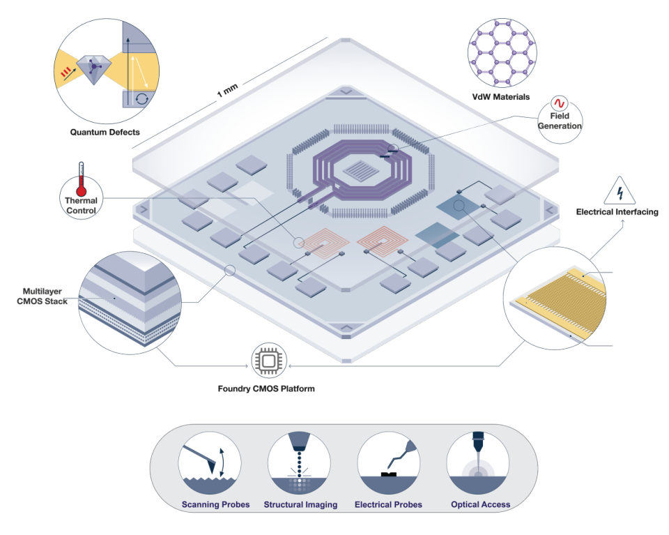
<figcaption class="paper-figure-caption"><b>Fig 1.</b> Figure 1: Foundry-fabricated CMOS platform for multimodal materials characterization. Schematic illustration of the CMOS-integrated platform implemented in a commercial semiconductor pro- cess. The architecture supports the heterogeneous integration and multimodal characterization of quantum materials. Insets highlight key platform components, including the integrated RF inductor, resistive heater, interdigitated electrodes (IDE), layered quantum materials integrated onto the chip surface, and the un- derlying CMOS stack. The bottom panel summarizes representative characterization modalities enabled by the platform, including scanning-probe measurements, structural imaging, electrical...</figcaption>
</figure>
<figure class="paper-figure-card">
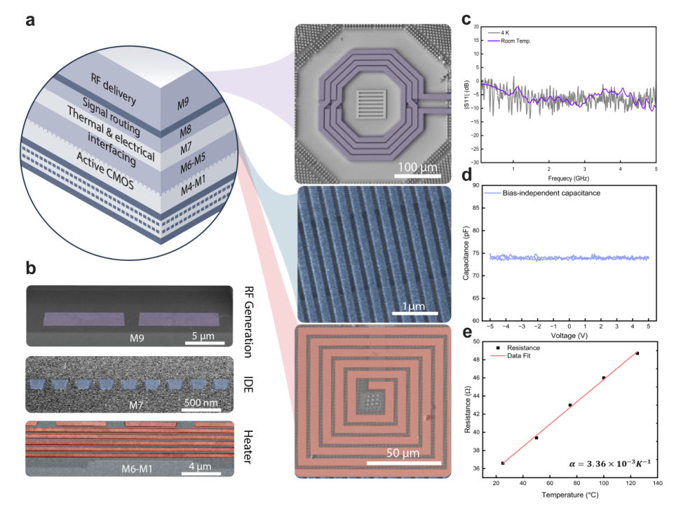
<figcaption class="paper-figure-caption"><b>Fig 2.</b> Figure 2: Fabricated CMOS-integrated platform: architecture and subsystem characterization. (a) Schematic of the layered chip stack and corresponding functional partitioning of the CMOS metal layers, together with false-colored SEM images of the realized structures: the octagonal RF inductor (100 µm scale bar), the interdigitated-electrode (IDE) array (1 µm scale bar), and the resistive heater (50 µm scale bar). (b) False-colored cross-sectional SEM images of the constituent components, showing the RF structure, IDE, and heater within the CMOS stack. (c) Measured S-parameters of the RF structure, showing the reflection coefficient (S11) across the 1–5 GHz band. (d) Measured...</figcaption>
</figure>
<figure class="paper-figure-card">
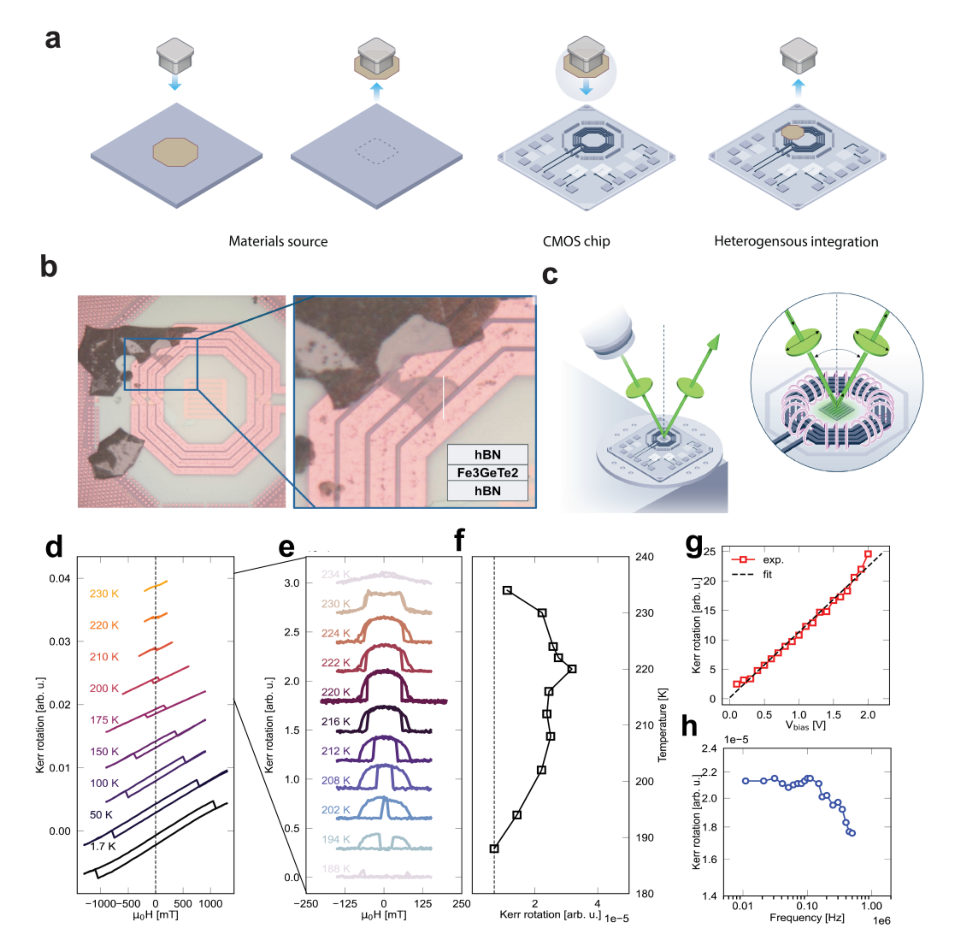
<figcaption class="paper-figure-caption"><b>Fig 3.</b> Figure 3: Cryogenic magnetic susceptibility measurements using the CMOS platform. Illus- tration of the heterogeneous integration process, showing transfer of an encapsulated hBN/Fe3GeTe2/hBN heterostructure from the source substrate onto the foundry-fabricated CMOS characterization chip. (b) Op- tical micrograph of the CMOS chip after transfer; inset shows the encapsulated heterostructure positioned over the integrated micro-inductor. (c) Schematic of the Kerr-rotation measurement configuration, where the integrated CMOS inductor provides AC magnetic excitation while Kerr rotation is detected optically. (d) Temperature-dependent Kerr-rotation hysteresis loops measured between 1.75 and 230...</figcaption>
</figure>
<figure class="paper-figure-card">
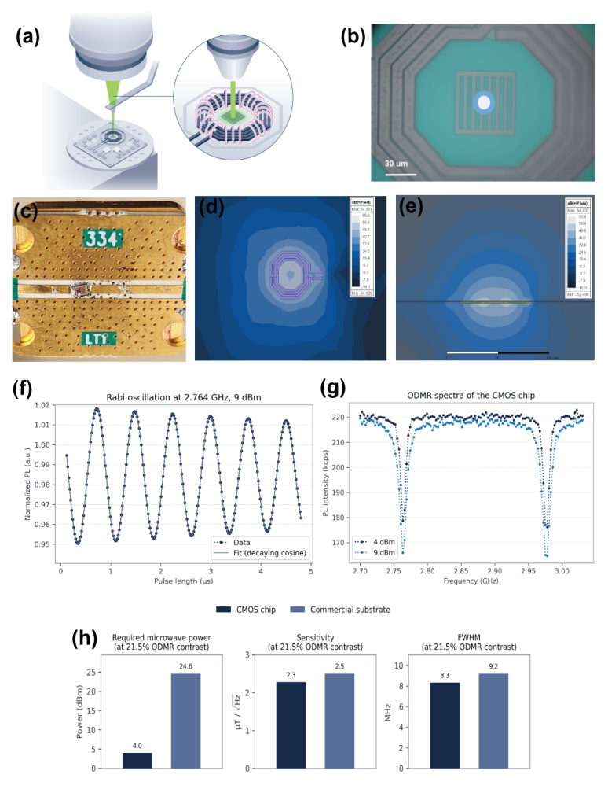
<figcaption class="paper-figure-caption"><b>Fig 4.</b> Figure 4: Benchmarking the foundry CMOS platform against a commercial microwave antenna for low-power NV spin control. (a) Schematic of the scanning NV measurement configuration, showing optical excitation and microwave delivery from the on-chip RF inductor. (b) Optical micrograph of the CMOS device highlighting the central inductor region used for spin control. (c) Experimental setup with the CMOS chip wire-bonded and interfaced for RF excitation. (d,e) Electromagnetic simulations of the RF magnetic field distribution generated by the on-chip inductor, showing spatial localization in the device plane and decay along the out-of-plane direction. (f) Rabi oscillations measured at 2.764 GHz,...</figcaption>
</figure>
<figure class="paper-figure-card">
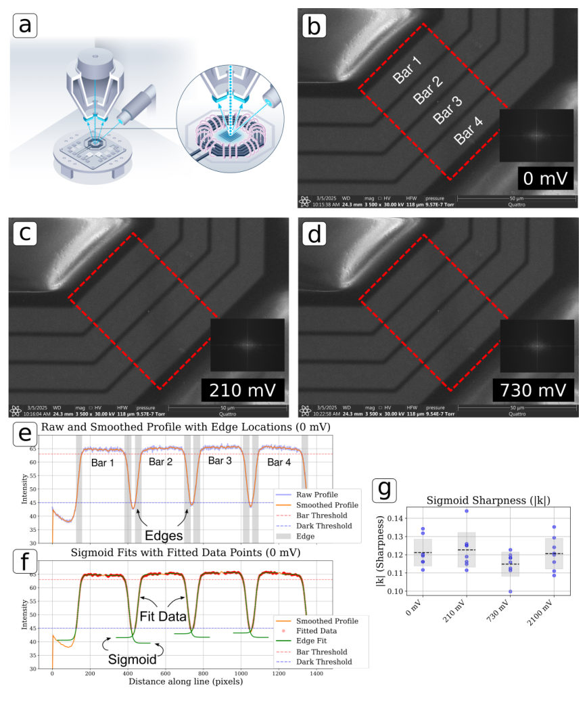
<figcaption class="paper-figure-caption"><b>Fig 5.</b> Figure 5: SEM compatibility of the CMOS platform during device operation. (a) Schematic of SEM imaging while the integrated inductor is electrically driven. (b–d) Representative SEM images acquired under different inductor bias conditions; corresponding FFTs are shown as insets. No visible image distortion or field-induced artifacts are observed during operation. (e) Overview of the knife-edge image-quality analysis used to quantify edge sharpness. (f) Representative sigmoid fits to the extracted edge profiles. (g) Extracted edge-sharpness metric for all operating conditions, showing no statistically significant variation with applied bias. Details of the analysis procedure are provided in...</figcaption>
</figure>
</div>

<p><strong>Summary.</strong> This work introduces a novel, scalable characterization platform built using standard 65-nm CMOS technology to measure multiple physical properties (microwave, thermal, electrical) simultaneously. By integrating these functions onto a single chip, the authors overcome limitations in reproducibility and scalability inherent in current bespoke experimental setups. This breakthrough enables more accessible and standardized quantum materials research.</p>
<p><strong>Why it may be interesting.</strong> The development of standardized, foundry-compatible hardware platforms is crucial for advancing quantum science by removing significant engineering bottlenecks associated with custom cryogenic setups.</p>
<details>
<summary>Detailed structure</summary>
<p><strong>Main problem.</strong> Current quantum materials characterization methods are limited by custom, non-scalable hardware setups that cannot easily integrate multiple measurement modalities.</p>
<p><strong>Main result.</strong> The authors demonstrated a scalable, foundry-manufacturable CMOS platform capable of integrating microwave, thermal, and electrical probes for multimodal quantum sensing.</p>
<p><strong>Method.</strong> They repurposed a commercial 65-nm CMOS process to functionally partition the metal stack into distinct subsystems within a small footprint.</p>
<p><strong>Model / system.</strong> The physical system is an integrated chip built on a standard CMOS foundry platform, featuring interdigitated electrodes (IDEs) for electrical sensing and patterned inductors for microwave excitation. This allows for heterogeneous integration of various quantum measurements.</p>
<p><strong>Key observables.</strong> Magnetic susceptibility ($\chi$), ODMR contrast ($>20\%$), $    ext{S}$-parameters, capacitance-voltage ($  ext{C–V}$) response, and SEM image sharpness metrics.</p>
<p><strong>Important parameters / regimes.</strong> Operating temperatures down to $1.75 	ext{ K}$, microwave power levels of $4–9 	ext{ dBm}$, and a platform size limited to $1 	ext{ mm}^2$.</p>
<p><strong>Assumptions / limitations.</strong> The approach relies on repurposing existing commercial CMOS back-end-of-line capabilities, and magnetic measurements involve transferring samples onto the chip.</p>
<p><strong>Figures summary.</strong> Figures show schematic architecture partitioning (Fig 1), detailed measurement results including $ ext{S}$-parameters, $   ext{C–V}$ curves, and temperature dependence of susceptibility (Fig 2); ODMR benchmarking compares CMOS vs. antenna setups (Fig 4).</p>
<p><strong>Paper structure.</strong> The paper progresses from identifying the need for scalable multimodal characterization to presenting measurements across multiple domains: RF/Microwave ($    ext{S}$-params, ODMR), Electrical ($  ext{C–V}$ on IDEs), and Thermal (resistance vs. T), culminating in a demonstration of integrated functionality.</p>
</details>
<details>
<summary>Abstract</summary>
<p>Quantum materials experiments increasingly rely on microwave, electrical, thermal, optical, and structural probes, but these capabilities are typically assembled from custom hardware that limits reproducibility and scalability. Here we show that a commercial 65-nm CMOS process can be repurposed as a passive, foundry-manufacturable characterization platform by functionally partitioning its metal stack into microwave, thermal, and electrical subsystems within a 1 mm2 footprint. The integrated RF architecture enables cryogenic magnetic susceptibility measurements of Fe3GeTe2 heterostructures at 1.75 K without sample-specific fabrication. We further demonstrate NV-center optically detected magnetic resonance (ODMR) with &gt;20% contrast at 4-9 dBm microwave power, reducing power requirements by 20-25 dB relative to conventional antenna-based approaches while maintaining sensitivities of 2-3 uT/sqrt(Hz). We additionally confirm compatibility with in-situ electron-beam imaging, showing no measurable degradation in image quality upon device operation. These results establish a scalable, foundry-manufacturable platform for multimodal quantum sensing and materials characterization.</p>
</details>
<p><sub><a href="#top">↑ back to top</a></sub></p>

<p><a id="paper-2607.17988"></a></p>
<h3 id="gate-tunable-giant-anomalous-hall-effect-in-magnetic-topological-insulator-bilayer"><a href="http://arxiv.org/abs/2607.17988v1">Gate-tunable giant anomalous Hall effect in magnetic topological insulator bilayer</a></h3>
<p><strong>Authors:</strong> Basavaraja G, Mukul Kabir<br>
<strong>Type:</strong> theory · <strong>Category:</strong> other · <strong>PDF:</strong> <a href="https://arxiv.org/pdf/2607.17988v1">https://arxiv.org/pdf/2607.17988v1</a><br>
<strong>Analysis basis:</strong> full PDF text, analyzed in chunks
<strong>Topic relevance:</strong> <code>driven-dissipative phase transition</code> <strong>2/5</strong> · <code>analog quantum simulation</code> <strong>1/5</strong> · <code>exotic spin models in light-matter</code> <strong>1/5</strong> · <code>methods for driven-dissipative</code> <strong>1/5</strong> · <code>non-equilibrium dynamics</code> <strong>1/5</strong> · <code>spintronics-quantum-optics interface</code> <strong>1/5</strong></p>
<div class="figure-strip-hint">↔ Scroll figures horizontally</div>
<div class="paper-figures-scroll">
<figure class="paper-figure-card">
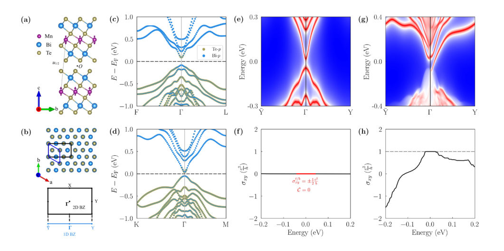
<figcaption class="paper-figure-caption"><b>Fig 1.</b> Figure 1. Crystal structure and topological phases of MnBi2Te4. (a) The schematic crystal structure of MnBi2Te4 illustrates ferromagnetic Mn layers that are coupled antiferromagnetically across the vdW gap, exhibiting A-type AFM ordering. The vector u1/2 represents the half-translation connecting these Mn layers, while O indicates the inversion center of the structure. (b) The top view along the c-axis highlights the hexagonal unit cell, outlined by solid blue lines, alongside the solid black rectangular supercell employed for surface state calculations. Additionally, it shows the two-dimensional BZ and the projected one- dimensional BZ, along which the edge modes are computed. The...</figcaption>
</figure>
<figure class="paper-figure-card">
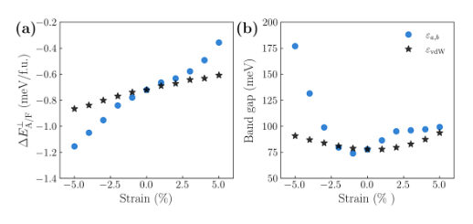
<figcaption class="paper-figure-caption"><b>Fig 2.</b> Figure 2. Lattice strain does not induce magnetic or electronic phase transitions in bilayer MnBi2Te4. (a) The interlayer ex- change coupling remains AFM (∆E⊥ A/F &lt; 0) under both in- plane biaxial strain εa,b and variations in the vdW gap εvdW. (b) The corresponding electronic structure remains gapped throughout. Consequently, the undoped bilayer retains its Axion insulating state, indicating that lattice strain alone is an insufficient perturbation to drive a transition to the con- ventional anomalous Hall regime.</figcaption>
</figure>
<figure class="paper-figure-card">
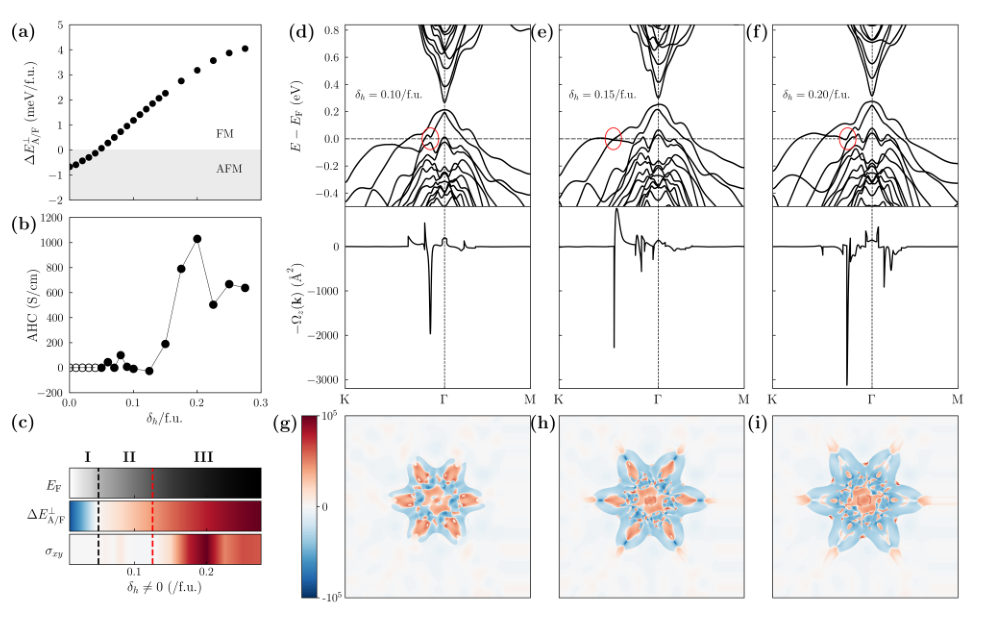
<figcaption class="paper-figure-caption"><b>Fig 3.</b> Figure 3. Magnetic and electronic evolution of bilayer MnBi2Te4 under hole doping. (a) The energy difference between the interlayer AFM and FM couplings, ∆E⊥ A/F, in bilayer MnBi2Te4 indicates a transition from AFM to FM state as the doping concentration increases. (b) The calculated anomalous Hall conductivity peaks at a doping level of approximately 0.2 holes/f.u. doping. Open circles denote configurations where the interlayer coupling remains AFM. (c) Schematic evolution of the electronic state (position of the Fermi level in the valence band from its maximum), magnetic state (∆E⊥ A/F) and transport properties (σxy), identifying three distinct regimes for δh ̸= 0. (I) Metallic AFM with...</figcaption>
</figure>
<figure class="paper-figure-card">
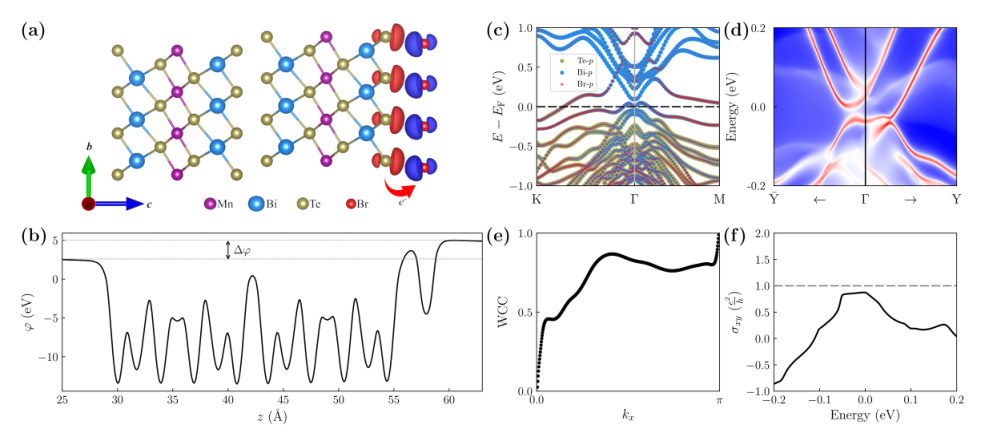
<figcaption class="paper-figure-caption"><b>Fig 4.</b> Figure 4. Surface functionalization and topological transport in Br-doped bilayer MnBi2Te4. (a) Schematic illustration of the 2SL structure with electronegative Br atoms absorbed on the top surface. Bonding charge density analysis, ∆ρ(r), reveals electron depletion (red) and accumulation (blue) at the Te and Br sites, respectively, confirming that surface functionalization effectively hole-dopes the system. (b) Calculated electrostatic potential φ, perpendicular to the two-dimensional plane. A significant potential difference, ∆φ = 2.5 eV, indicates a strong internal electric field that breaks the inversion symmetry. (c) Calculated electronic structure exhibiting metallic behavior with...</figcaption>
</figure>
</div>

<p><strong>Summary.</strong> This work explores how manipulating doping or electric fields can tune the electronic state of $   ext{MnBi}_2 ext{Te}_4$ bilayers across topological and conventional anomalous Hall regimes. By combining DFT calculations with Monte Carlo simulations, the authors demonstrate a versatile framework for engineering magnetic and transport properties in these materials. This offers direct pathways toward reconfigurable quantum devices.</p>
<p><strong>Why it may be interesting.</strong> While focused on solid-state magnetism/topology, the concept of tuning quantum transport via external fields (gating) and controlling magnetic order parameters is highly relevant to engineered quantum materials platforms.</p>
<details>
<summary>Detailed structure</summary>
<p><strong>Main problem.</strong> The study investigates the systematic electronic, magnetic, and topological phase transitions within ultrathin magnetic topological insulator bilayers.</p>
<p><strong>Main result.</strong> Electrostatic gating or surface doping can drive a crossover from an insulating topological state to a conventional anomalous Hall regime, allowing for tunable quantum device engineering.</p>
<p><strong>Method.</strong> Calculations combine first-principles DFT methods with tight-binding models and classical Heisenberg Monte Carlo simulations.</p>
<p><strong>Model / system.</strong> The system is the $ ext{MnBi}_2 ext{Te}_4$ magnetic topological insulator, analyzed in both bulk and bilayer limits, considering changes in interlayer coupling (AFM to FM).</p>
<p><strong>Key observables.</strong> Anomalous Hall Conductivity ($\sigma_{xy}$), Magnetic Ordering Temperature ($T_c$), Fermi Level position relative to the gap, and Interlayer Coupling type.</p>
<p><strong>Important parameters / regimes.</strong> Doping concentration (hole/electron doping), dimensionality (bilayer limit), and magnetic coupling strength.</p>
<p><strong>Assumptions / limitations.</strong> The analysis relies on symmetry considerations ($\mathbb{Z}_2$ invariant, $T$, $S$) to classify topological phases and uses DFT for electronic structure calculations.</p>
<p><strong>Figures summary.</strong> Figures illustrate band structures confirming the topological insulator state, edge spectra showing quantization/suppression of $\sigma_{xy}$, and WCC plots diagnosing topological invariants in different coupling regimes.</p>
<p><strong>Paper structure.</strong> The paper systematically analyzes the bulk properties (AFM vs FM) to establish the baseline topology, then focuses on the bilayer limit, detailing how doping or gating induces a crossover between quantized topological states and high-conductivity anomalous Hall states.</p>
</details>
<details>
<summary>Abstract</summary>
<p>In the two-dimensional limit, the intrinsic magnetic topological insulator MnBi2Te4 provides a compelling platform for exploring thickness-dependent quantum states and their evolution under external perturbations. Using first-principles calculations and classical Heisenberg Monte Carlo simulations, we demonstrate that electrostatic gating and surface chemical functionalization can drive a systematic crossover from the topological to the conventional anomalous Hall regime. This transition is governed by the simultaneous shift of the Fermi level away from the topological gap and a reversal of interlayer coupling from antiferromagnetic to ferromagnetic order. Results reveal that hole doping drives the Fermi level into the valence bands, inducing an exceptionally high anomalous Hall conductivity of 1127 S/cm arising from Berry curvature hot spots. In contrast, surface chemical doping drives a topological state where intrinsic $σ_{xy}$ is reduced from $e^2/h$ to $\sim 0.86\ e^2/h$ by the spectral coexistance of chiral edge mode with metallic bulk states of the two-dimensional film. Furthermore, we show that both tuning routes significantly enhance in-plane exchange interactions, leading to a substantial increase in the magnetic ordering temperature relative to the pristine bilayer. These results establish a versatile framework for the simultaneous engineering of topological, magnetic, and transport properties in ultrathin MnBi2Te4, offering direct implications for the development of reconfigurable quantum devices.</p>
</details>
<p><sub><a href="#top">↑ back to top</a></sub></p>

<p><a id="paper-2607.17216"></a></p>
<h3 id="relativistic-quantum-teleportation-protected-by-the-anti-unruh-effect"><a href="http://arxiv.org/abs/2607.17216v1">Relativistic quantum teleportation protected by the anti-Unruh effect</a></h3>
<p><strong>Authors:</strong> Reza Hamzehofi, Davood Afshar, Mehrzad Ashrafpour<br>
<strong>Type:</strong> theory · <strong>Category:</strong> quantum information and computing · <strong>PDF:</strong> <a href="https://arxiv.org/pdf/2607.17216v1">https://arxiv.org/pdf/2607.17216v1</a><br>
<strong>Analysis basis:</strong> full PDF text, analyzed in chunks
<strong>Topic relevance:</strong> <code>entanglement &amp; information structure</code> <strong>2/5</strong> · <code>Keldysh / 2PI / non-Gaussian methods</code> <strong>1/5</strong> · <code>correlated / nonlocal dissipation</code> <strong>1/5</strong> · <code>driven-dissipative phase transition</code> <strong>1/5</strong> · <code>methods for driven-dissipative</code> <strong>1/5</strong> · <code>non-equilibrium dynamics</code> <strong>1/5</strong></p>
<div class="figure-strip-hint">↔ Scroll figures horizontally</div>
<div class="paper-figures-scroll">
<figure class="paper-figure-card">
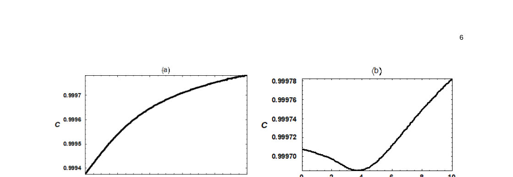
<figcaption class="paper-figure-caption"><b>Fig 1.</b> Fig. 1 Wooster&#x27;s concurrence C between Alice and Rob as a function of Rob&#x27;s proper acceleration 𝑎, for (a) 0.6 = and (b) 6 = , assuming 0.06 = and 0.4 = .</figcaption>
</figure>
<figure class="paper-figure-card">
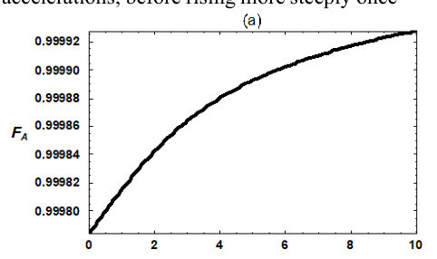
<figcaption class="paper-figure-caption"><b>Fig 2.</b> Fig. 2 Average teleportation fidelity as a function of Rob&#x27;s proper acceleration a , for (a): 0.6 = and (b): 6 = . Parameters are the same as in Fig.1.</figcaption>
</figure>
</div>

<p><strong>Summary.</strong> This paper theoretically examines quantum teleportation fidelity when one participant accelerates relative to an inertial observer. It shows that while the Unruh effect predicts entanglement loss due to acceleration, a subsequent anti-Unruh effect causes the fidelity to recover and approach perfect transmission at high accelerations. This suggests relativistic motion can actively protect or enhance quantum information transfer.</p>
<p><strong>Why it may be interesting.</strong> This work directly addresses how fundamental spacetime effects (acceleration/Unruh effect) impact quantum communication protocols like teleportation, providing theoretical insights into relativistic quantum information processing.</p>
<details>
<summary>Detailed structure</summary>
<p><strong>Main problem.</strong> The study investigates how relativistic acceleration affects the fidelity of quantum teleportation, specifically contrasting the expected degradation from the Unruh effect with potential recovery mechanisms from the anti-Unruh effect.</p>
<p><strong>Main result.</strong> The anti-Unruh effect can protect and enhance quantum correlations, causing the teleportation fidelity to increase monotonically towards unity at high accelerations. This demonstrates that acceleration can be an exploitable resource for maintaining quantum information.</p>
<p><strong>Method.</strong> The analysis uses perturbative methods to calculate the reduced density matrix of the shared entanglement resource by tracing out the field modes interacting with Unruh-DeWitt detectors.</p>
<p><strong>Model / system.</strong> The system models standard quantum teleportation where one participant (Rob) undergoes uniform acceleration in Minkowski spacetime, while Alice remains inertial. The interaction is mediated by a massive scalar field ($\phi$) coupled to an Unruh-DeWitt detector.</p>
<p><strong>Key observables.</strong> Teleportation fidelity ($F$ or $A_F$), entanglement (Concurrence $C$), and information gain ($\Delta S$).</p>
<p><strong>Important parameters / regimes.</strong> Proper acceleration ($a$), detector energy gap ($\Omega$), field mass ($m$), and coupling constant ($\lambda$).</p>
<p><strong>Assumptions / limitations.</strong> The analysis relies on a first-order perturbative truncation of the evolution operator in the weak-coupling regime.</p>
<p><strong>Figures summary.</strong> Figures show that for small energy gaps, fidelity increases monotonically with acceleration; for larger gaps, the crossover between Unruh degradation and anti-Unruh enhancement is visible in both concurrence and fidelity plots.</p>
<p><strong>Paper structure.</strong> The paper establishes the relativistic setup using UDW detectors coupled to a scalar field. It then calculates entanglement measures (concurrence) and average teleportation fidelity by partial tracing over field modes, analyzing the dependence on acceleration $a$ and gap $\Omega$.</p>
</details>
<details>
<summary>Abstract</summary>
<p>We investigate standard quantum teleportation in a relativistic setting where one participant, Rob, undergoes uniform acceleration while Alice remains inertial. Rob interacts locally with a massive scalar field modeled by an Unruh-DeWitt detector. We show that for small detector energy gaps, the entanglement shared between Alice and Rob increases monotonically with acceleration. For larger gaps, entanglement initially decreases at low accelerations due to the Unruh effect, but is subsequently restored and enhanced at higher accelerations as a consequence of the anti-Unruh effect. This behavior is associated with a reduction of the effective detector temperature, leading to a recovery of quantum coherence previously lost to the field. As a result, the teleportation fidelity increases with acceleration and approaches unity in the high-acceleration regime. Our results demonstrate that the anti-Unruh effect can protect and recover quantum information, providing a potential mechanism to mitigate relativistic degradation of quantum correlations.</p>
</details>
<p><sub><a href="#top">↑ back to top</a></sub></p>

<p><a id="paper-2607.17101"></a></p>
<h3 id="ghz-equivalent-state-distribution-in-quantum-networks-reducing-decoherence-and-quantum-resource-consumption"><a href="http://arxiv.org/abs/2607.17101v1">GHZ-Equivalent State Distribution in Quantum Networks: Reducing Decoherence and Quantum Resource Consumption</a></h3>
<p><strong>Authors:</strong> Chun-Hsiang Wang, Chia-Wei Tsai<br>
<strong>Type:</strong> theory · <strong>Category:</strong> quantum information and computing · <strong>PDF:</strong> <a href="https://arxiv.org/pdf/2607.17101v1">https://arxiv.org/pdf/2607.17101v1</a><br>
<strong>Analysis basis:</strong> full PDF text, analyzed in chunks
<strong>Topic relevance:</strong> <code>entanglement &amp; information structure</code> <strong>2/5</strong> · <code>correlated / nonlocal dissipation</code> <strong>1/5</strong> · <code>driven-dissipative phase transition</code> <strong>1/5</strong> · <code>methods for driven-dissipative</code> <strong>1/5</strong> · <code>non-equilibrium dynamics</code> <strong>1/5</strong></p>
<div class="figure-strip-hint">↔ Scroll figures horizontally</div>
<div class="paper-figures-scroll">
<figure class="paper-figure-card">
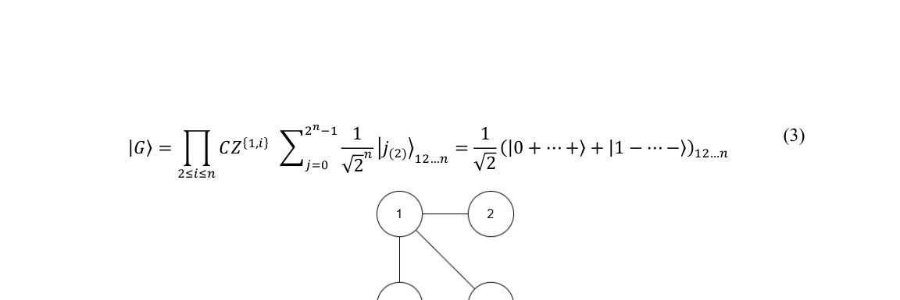
<figcaption class="paper-figure-caption"><b>Fig 1.</b> Fig. 1. An example of a 4-qubit star graph state. A complete graph state |𝐺⟩ is a special type of graph state in which all nodes are pairwise connected, as expressed in Eq. (4). Complete graph states find applications in various areas, such as QCP [8] and quantum repeaters [30].</figcaption>
</figure>
<figure class="paper-figure-card">
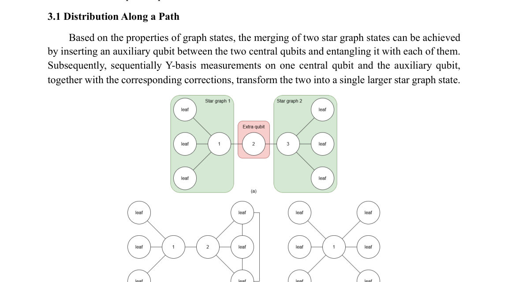
<figcaption class="paper-figure-caption"><b>Fig 2.</b> Fig. 3. The process of merging two star graph states. (a) shows the entangled state after inserting 𝑞.. (b) illustrates the state after measuring 𝑞B in the Y-basis, (c) shows the final state after 𝑞. is measured in the Y-basis.</figcaption>
</figure>
<figure class="paper-figure-card">
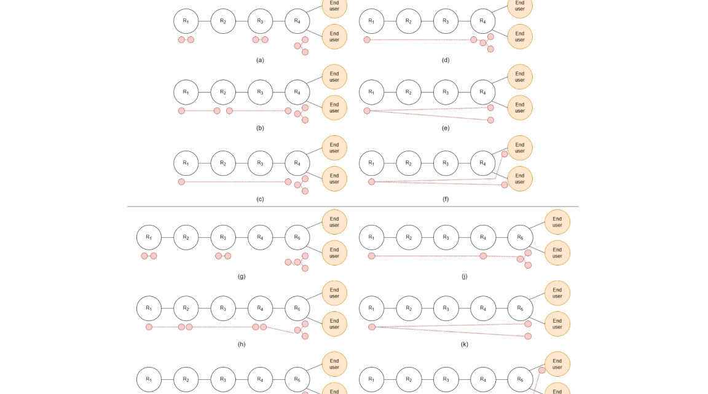
<figcaption class="paper-figure-caption"><b>Fig 3.</b> Fig. 4. Qubit distribution method, the red circles represent qubits, (a)-(f) and (g)-(l) illustrate the examples with four and five nodes in the repeater chain, respectively. (a) Initial states generated by repeaters. (b) States after qubits are transmitted to neighboring repeaters. (c) Y-basis measurements on qubits held by 𝑟. to remove unused vertices and edges. (d) Establishment of states with intermediate qubits. (e) Resulting state after Y-basis measurements. (f) final state after performing corrections and sending qubits to the corresponding end users. (g)-(i) Same as (a)-(c). (j) CZ operation on both qubits held by 𝑟G, then Y-basis measurement on the former qubit. (k) Sequentially...</figcaption>
</figure>
<figure class="paper-figure-card">
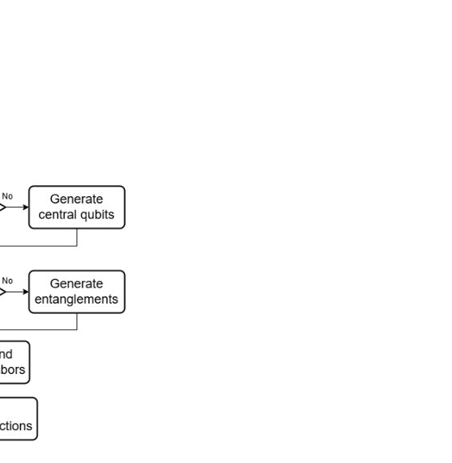
<figcaption class="paper-figure-caption"><b>Fig 4.</b> Fig. 5. A brief flow chart for the process.</figcaption>
</figure>
<figure class="paper-figure-card">
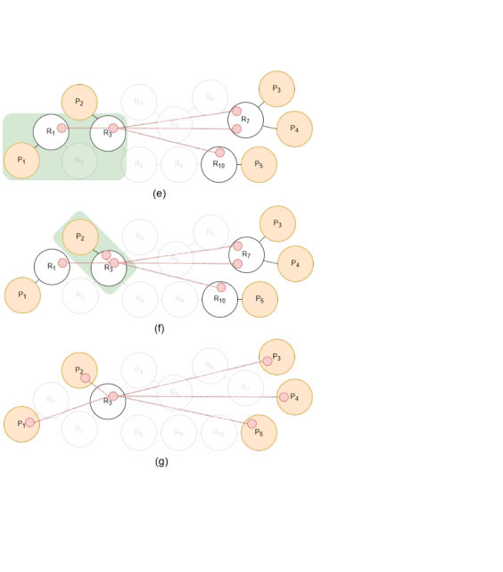
<figcaption class="paper-figure-caption"><b>Fig 5.</b> Fig. 6. Example of star graph distribution.</figcaption>
</figure>
</div>

<p><strong>Summary.</strong> This paper introduces an efficient scheme to distribute GHZ-equivalent graph states across noisy quantum repeater networks. By combining state merging with Minimum Steiner Tree optimization, the authors achieve linear scaling in resources while explicitly minimizing decoherence accumulation during transmission. This provides a practical framework for realizing large-scale quantum communication protocols.</p>
<p><strong>Why it may be interesting.</strong> This work directly tackles practical limitations in quantum networking—namely decoherence and resource scaling—by providing a concrete, optimized protocol for distributing complex entangled states like graph states.</p>
<details>
<summary>Detailed structure</summary>
<p><strong>Main problem.</strong> The study addresses the challenge of efficiently distributing GHZ-equivalent entangled states across large, repeater-based quantum networks while actively mitigating decoherence effects.</p>
<p><strong>Main result.</strong> A novel scheme was proposed that achieves linear scaling in both qubit usage and controlled gate count ($O(N)$) for graph state distribution, proving its effectiveness via simulation.</p>
<p><strong>Method.</strong> The approach combines a specialized state merging technique with an optimization framework modeled after the Minimum Steiner Tree problem to route entanglement efficiently.</p>
<p><strong>Model / system.</strong> The physical system is a quantum network composed of repeaters connected by quantum channels. The target resource is graph states, which are LOCC-equivalent to GHZ states, used for protocols like QKD.</p>
<p><strong>Key observables.</strong> End-to-end fidelity, qubit usage scaling ($O(N)$), controlled gate count scaling (linear), and total physical transmission length.</p>
<p><strong>Important parameters / regimes.</strong> Decoherence rates, channel weights (physical lengths), and the number of nodes/edges in the network graph.</p>
<p><strong>Assumptions / limitations.</strong> The primary assumption is that decoherence during long-distance transmission is the limiting factor, necessitating repeaters; future work suggests incorporating heterogeneous noise models beyond simple physical length.</p>
<p><strong>Figures summary.</strong> Figures illustrate examples of star and complete graph states, the process flow for state merging using auxiliary qubits and Y-basis measurements, and qubit distribution methods in repeater chains.</p>
<p><strong>Paper structure.</strong> The paper introduces the problem by defining the need for efficient resource distribution. It details a novel scheme involving state merging (Section 3.1) followed by optimizing the network topology via an MST formulation (Section 3.2). The appendices provide mathematical proofs regarding gate equivalences and measurement calculations.</p>
</details>
<details>
<summary>Abstract</summary>
<p>This study proposes a novel scheme for distributing GHZ-equivalent states across repeater-based quantum networks, with particular focus on the analysis and mitigation of decoherence effects during transmission. The proposed scheme enables remote users to share graph states, which can be leveraged to implement various quantum communication protocols, such as quantum key distribution and quantum secret sharing. Compared with existing approaches, the proposed distributed scheme requires only O(N) qubits without introducing redundant entanglement structures. Together with the linear-scaling merging procedure in both controlled gate count and qubit usage, the proposed framework supports more efficient large-scale graph state distribution. To evaluate its feasibility and correctness, this study utilizes the quantum network simulation tool, NetSquid, to implement the proposed scheme. Simulation results demonstrate that the proposed approach is both effective and practical for executing quantum communication protocols within quantum networks.</p>
</details>
<p><sub><a href="#top">↑ back to top</a></sub></p>

<p><a id="paper-2607.16702"></a></p>
<h3 id="reliability-is-not-free-in-universal-quantum-work-extraction"><a href="http://arxiv.org/abs/2607.16702v1">Reliability Is Not Free in Universal Quantum Work Extraction</a></h3>
<p><strong>Authors:</strong> Shuai Zeng<br>
<strong>Type:</strong> theory · <strong>Category:</strong> statistical mechanics · <strong>PDF:</strong> <a href="https://arxiv.org/pdf/2607.16702v1">https://arxiv.org/pdf/2607.16702v1</a><br>
<strong>Analysis basis:</strong> full PDF text, analyzed in chunks
<strong>Topic relevance:</strong> <code>non-equilibrium universality</code> <strong>2/5</strong> · <code>correlated / nonlocal dissipation</code> <strong>1/5</strong> · <code>driven-dissipative phase transition</code> <strong>1/5</strong> · <code>methods for driven-dissipative</code> <strong>1/5</strong> · <code>non-equilibrium dynamics</code> <strong>1/5</strong></p>
<div class="figure-strip-hint">↔ Scroll figures horizontally</div>
<div class="paper-figures-scroll">
<figure class="paper-figure-card">
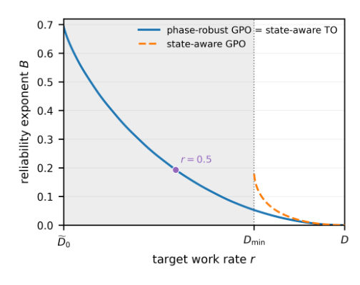
<figcaption class="paper-figure-caption"><b>Fig 1.</b> FIG. 1. Finite reliability exponents for τ = diag(0.8, 0.2) and |ψθ⟩= (|0⟩+eiθ|1⟩)/ √</figcaption>
</figure>
</div>

<p><strong>Summary.</strong> This theoretical work examines the limits of quantum work extraction reliability by comparing state-aware versus phase-independent protocols. It proves that while the average energy extracted (work rate) can be universal regardless of input knowledge, achieving optimal exponential reliability requires retaining precise knowledge of the system's initial state. The findings highlight a critical gap between these two measures of performance.</p>
<p><strong>Why it may be interesting.</strong> It provides rigorous mathematical tools (Remez inequality) to distinguish between average thermodynamic performance and finite-time operational robustness, which is crucial when designing quantum engines or communication protocols.</p>
<details>
<summary>Detailed structure</summary>
<p><strong>Main problem.</strong> The paper investigates whether the first-order universality observed in asymptotic quantum work extraction extends to reliability, which is characterized by the exponential decay rate of failure.</p>
<p><strong>Main result.</strong> Input-state knowledge can be irrelevant for the average work rate but remains indispensable for achieving optimal exponential reliability bounds.</p>
<p><strong>Method.</strong> The authors use finite-blocklength identities and apply a trigonometric Remez inequality to upgrade minimax optimization problems into pointwise theorems regarding error exponents.</p>
<p><strong>Model / system.</strong> The analysis focuses on quantum work extraction from a coherent qubit time-translation orbit using a two-level work battery, comparing state-aware protocols against phase-independent ones.</p>
<p><strong>Key observables.</strong> Asymptotic Work Rate ($D(
ho\|	au)$), Reliability Exponents ($B_{	ext{aware}}^{	ext{GPO}}$, $B_{	ext{aware}}^{	ext{TO}}$), and Failure Probability ($\epsilon_n \sim e^{-nB}$).</p>
<p><strong>Important parameters / regimes.</strong> The reliability parameter $r$, the coherence time $    heta \in [0, 2\pi)$, and the block length $n$.</p>
<p><strong>Assumptions / limitations.</strong> The analysis relies on establishing exact finite-blocklength identities between different extraction protocols and using large-deviation theory for asymptotic limits.</p>
<p><strong>Figures summary.</strong> Figure 1 illustrates finite reliability branches, comparing common (phase-independent) exponents to state-aware GPO exponents, showing separation windows.</p>
<p><strong>Paper structure.</strong> The paper progresses by first establishing an exact identity between Gibbs-preserving extraction on an orbit and thermal operations. It then uses Remez's theorem to upgrade this minimax result to a pointwise statement, culminating in the comparison of state-aware vs. phase-independent reliability exponents for specific qubit families.</p>
</details>
<details>
<summary>Abstract</summary>
<p>Universal work extraction shows that input-state knowledge is unnecessary to attain the asymptotic free-energy rate. We ask whether this first-order universality extends to reliability, the exponential decay rate of extraction failure. In the work-battery fidelity formulation, we prove that no phase-independent Gibbs-preserving protocol can retain the state-aware Gibbs-preserving exponent throughout a coherent qubit time-translation orbit: at every positive target rate, its worst pointwise exponent is bounded by the corresponding state-aware thermal-operation value. The proof first establishes an exact finite-blocklength identity between phase-robust Gibbs-preserving extraction and state-aware thermal extraction. A trigonometric Remez inequality then upgrades this minimax identity to a pointwise theorem by ruling out exponential localization of the worst phase. For an explicit coherent-qubit family, known-phase Gibbs-preserving extraction is error free, whereas every phase-independent protocol has a finite worst-pointwise exponent. Thus input-state knowledge can be irrelevant to the first-order work rate yet indispensable for optimal exponential reliability.</p>
</details>
<p><sub><a href="#top">↑ back to top</a></sub></p>

<p><a id="paper-2607.17740"></a></p>
<h3 id="light-cone-scaling-of-in-circuit-noise-in-randomized-measurements"><a href="http://arxiv.org/abs/2607.17740v1">Light-Cone Scaling of In-Circuit Noise in Randomized Measurements</a></h3>
<p><strong>Authors:</strong> Pan Yu, Yan He, Yadong Wu<br>
<strong>Type:</strong> theory · <strong>Category:</strong> quantum information and computing · <strong>PDF:</strong> <a href="https://arxiv.org/pdf/2607.17740v1">https://arxiv.org/pdf/2607.17740v1</a><br>
<strong>Analysis basis:</strong> full PDF text, analyzed in chunks
<strong>Topic relevance:</strong> <code>quantum measurements</code> <strong>2/5</strong> · <code>correlated / nonlocal dissipation</code> <strong>1/5</strong> · <code>measurement-induced transitions</code> <strong>1/5</strong> · <code>methods for driven-dissipative</code> <strong>1/5</strong></p>
<div class="figure-strip-hint">↔ Scroll figures horizontally</div>
<div class="paper-figures-scroll">
<figure class="paper-figure-card">
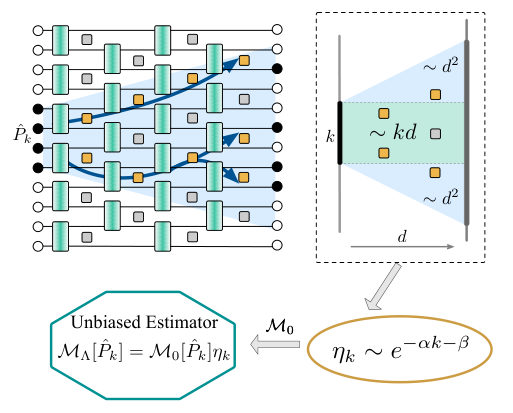
<figcaption class="paper-figure-caption"><b>Fig 1.</b> FIG. 1. Activated noise in shallow randomized mea- surements. A locally scrambled shallow circuit contains lo- cal two-qubit gates and noise channels. In the Heisenberg pic- ture, a noise channel is activated when it overlaps the evolving Pauli support, denoted as orange plaquettes, while inactive channels outside the path denoted as gray plaquettes do not damp the corresponding coefficient. For a contiguous size-k operator, the light cone contains a bulk contribution of order kd and two finite-depth fronts of order d2. The accumulated damping therefore follows ηk ∼e−αk−β, giving the displayed relation wEU ,Λ( ˆPk) = ηkwEU ,0( ˆPk) used to calibrate a noisy shadow estimator.</figcaption>
</figure>
<figure class="paper-figure-card">
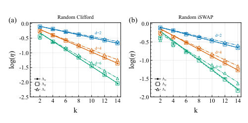
<figcaption class="paper-figure-caption"><b>Fig 2.</b> FIG. 2. Damping ratio for anisotropic and fluctu- ating in-circuit noise. Transfer-matrix simulations for N = 30 qubits with two-qubit Pauli damping rates λL = 0.06, λR = 0.02, and λLR = 0.07 for the PI, IP, and PP sec- tors, respectively. We compare uniform anisotropic noise Λu = (λL, λR, λLR), spatially fluctuating rates drawn from a narrow Gaussian centered at Λu with width Λu/5, and a deterministic linear temporal drift Λt = 2tΛu/(d −1) for t = 0, . . . , d −1, keeping the same layer-averaged rate as Λu. Markers distinguish the three noise models and same- colored straight lines are linear fits. Colors denote depths d = 2, 4, 6. The fits use k ∈[4, 14] for random Clifford gates and k...</figcaption>
</figure>
<figure class="paper-figure-card">
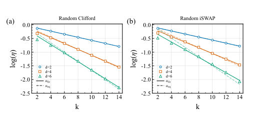
<figcaption class="paper-figure-caption"><b>Fig 3.</b> FIG. 3. Comparison with a heuristic equilibrium es- timate. Damping ratios for uniform two-qubit depolarizing noise with λu = 0.06 at depths d = 2, 4, 6. Markers show numerical data from the even-k branch. Solid lines fit both α and β in Eq. (7); dashed lines fix the heuristic first-cumulant equilibrium slope αeq = 15dλu/32 and fit only the intercept. Both fits use the even-k data from k = 4 through k = 14; the k = 2 points are shown but excluded from the fits. Panels (a) and (b) show random Clifford and locally scrambled iSWAP circuits, respectively.</figcaption>
</figure>
<figure class="paper-figure-card">
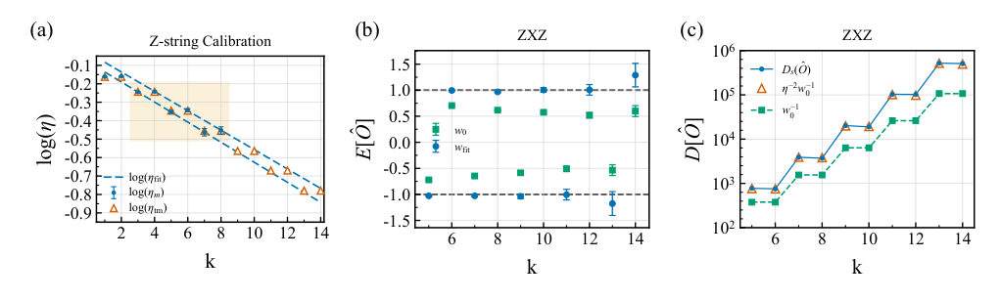
<figcaption class="paper-figure-caption"><b>Fig 4.</b> FIG. 4. Small-string calibration and prediction of larger observables. (a) Contiguous ˆZk strings measured on the product state ˆρ0 determine the geometry-resolved damping ratio. Small-k data in the shaded fitting window determine the parity-resolved dashed fits, which extrapolate to larger k and agree with the transfer-matrix results shown as triangles. (b) The calibrated coefficient corrects noisy-shadow estimates of the cluster-state string ˆOZXZ = ˆZ1 ˆY2 ˆ X3 · · · ˆ Xk−2 ˆYk−1 ˆZk, whose exact expectation value is (−1)k. The calibrated estimates, w−1 fit EU P</figcaption>
</figure>
</div>

<p><strong>Summary.</strong> This paper develops a detailed theory describing how local noise corrupts measurements used to characterize unknown quantum states. It derives an exponential scaling law for this noise bias based on the geometry (light cone) of the measured observable. The result proposes a practical calibration protocol that allows researchers to estimate properties of large observables by only measuring small, easily accessible strings.</p>
<p><strong>Why it may be interesting.</strong> This work provides crucial theoretical tools for quantifying and mitigating hardware imperfections (noise) in quantum characterization protocols, directly impacting the feasibility of running complex algorithms on NISQ devices by linking error to operator dynamics.</p>
<details>
<summary>Detailed structure</summary>
<p><strong>Main problem.</strong> The paper addresses how local gate and readout errors bias the reconstruction of quantum observables obtained via randomized measurements (like classical shadows) on near-term hardware.</p>
<p><strong>Main result.</strong> It establishes an exponential scaling law for noise damping ($\log \eta_k \propto -k$) related to the 'light cone' geometry of the measured Pauli operator, enabling a small-string calibration protocol.</p>
<p><strong>Method.</strong> The authors develop a microscopic description using the Heisenberg picture and path averaging to derive an activated formula for the noisy Pauli coefficient, analyzed via cumulant expansion.</p>
<p><strong>Model / system.</strong> The analysis focuses on locally scrambled shallow circuits in one dimension, modeling noise as weak local CPTP channels independent of random gates. The system is studied using randomized measurements applied to quantum states.</p>
<p><strong>Key observables.</strong> Damping ratio ($\eta_k$) quantifying the noise bias for an operator $\hat{P}_k$, and the scaling parameters $\alpha$ and $eta$.</p>
<p><strong>Important parameters / regimes.</strong> Circuit depth ($d$), size of contiguous observable string ($k$), and the nature/strength of local Pauli noise (e.g., anisotropic, fluctuating).</p>
<p><strong>Assumptions / limitations.</strong> The analysis assumes weak local CPTP noise independent of sampled random gates; linear scaling is assumed to hold for large $k$ away from boundaries.</p>
<p><strong>Figures summary.</strong> Figures demonstrate the exponential decay ($\log \eta = -\alpha k - eta$) of the damping ratio for various circuits (Random Clifford, iSWAP) and show that small-string measurements can calibrate estimates for larger, complex observables.</p>
<p><strong>Paper structure.</strong> The paper moves from developing a microscopic noise model based on activated path averaging to deriving the light-cone scaling law. It then verifies this scaling numerically using two-qubit circuits under various noise types, culminating in demonstrating a practical small-string calibration protocol.</p>
</details>
<details>
<summary>Abstract</summary>
<p>Randomized measurements provide an efficient way to extract physical properties of an unknown quantum state from limited data. On near-term hardware, gate and readout errors bias the reconstructed observables. Here we develop a microscopic description of this bias for locally scrambled shallow circuits. Independent local twirling reduces local implementation noise to stochastic Pauli damping, and a noise event contributes only when it overlaps the Heisenberg evolution of the measured Pauli operator. This gives an activated path-average formula for the noisy Pauli coefficient. In one-dimensional shallow circuits, the activated noise volume grows linearly with the size of a contiguous observable, leading to an exponential damping ratio. We verify this scaling for two-qubit random Clifford and locally scrambled iSWAP circuits with two-qubit Pauli noise, including spatial fluctuations and temporal drift. The scaling supports a small-string calibration protocol that predicts larger string observables without learning the full noisy measurement channel. Our result relates the noise bias of shallow-shadow protocols directly to operator-evolving dynamics.</p>
</details>
<p><sub><a href="#top">↑ back to top</a></sub></p>

<p><a id="paper-2607.17443"></a></p>
<h3 id="operator-centric-clifford-algebra-for-variational-eigensolvers-and-finite-shot-adaptive-selection"><a href="http://arxiv.org/abs/2607.17443v1">Operator-centric Clifford algebra for variational eigensolvers and finite-shot adaptive selection</a></h3>
<p><strong>Authors:</strong> Ginanjar Utama, Hermawan Kresno Dipojono<br>
<strong>Type:</strong> theory · <strong>Category:</strong> quantum information and computing · <strong>PDF:</strong> <a href="https://arxiv.org/pdf/2607.17443v1">https://arxiv.org/pdf/2607.17443v1</a><br>
<strong>Analysis basis:</strong> full PDF text, analyzed in chunks
<strong>Topic relevance:</strong> <code>quantum measurements</code> <strong>2/5</strong> · <code>analog quantum simulation</code> <strong>1/5</strong> · <code>measurement-induced transitions</code> <strong>1/5</strong> · <code>methods for driven-dissipative</code> <strong>1/5</strong></p>
<div class="figure-strip-hint">↔ Scroll figures horizontally</div>
<div class="paper-figures-scroll">
<figure class="paper-figure-card">
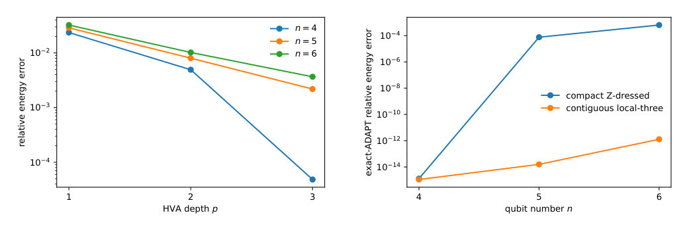
<figcaption class="paper-figure-caption"><b>Fig 1.</b> FIG. 1. Deterministic critical-point results. (a) Relative energy error of the Hamiltonian variational ansatz versus depth. (b) Exact-ADAPT error for the compact AZYZ pool and the systematic Alocal3 pool. The local-three runs use a 20-operator cap.</figcaption>
</figure>
<figure class="paper-figure-card">
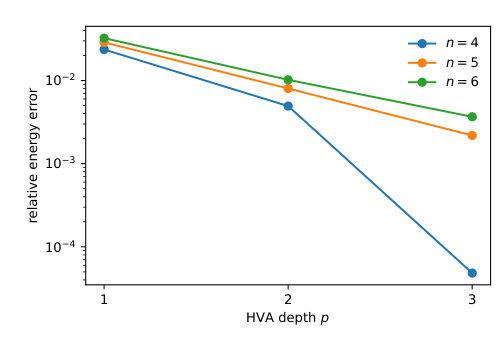
<figcaption class="paper-figure-caption"><b>Fig 2.</b> Figure 2 and Table III compare the three policies at a common base and ceiling. A single fixed batch pro- duces no successful runs: 0/100, with Wilson interval [0.0%, 3.7%]. Uniform escalation and racing both produce</figcaption>
</figure>
<figure class="paper-figure-card">
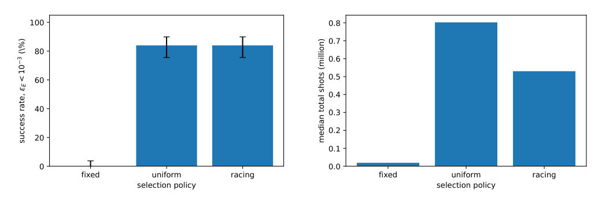
<figcaption class="paper-figure-caption"><b>Fig 3.</b> FIG. 2. Finite-shot policy comparison at n = 4, base 128 and ceiling 4096 shots per Pauli word. (a) Success probability for ϵE &lt; 10−3 with 95% Wilson intervals. (b) Median total measurements. Uniform escalation and racing have equal observed success, while racing removes clear losers and lowers the median shot count.</figcaption>
</figure>
<figure class="paper-figure-card">
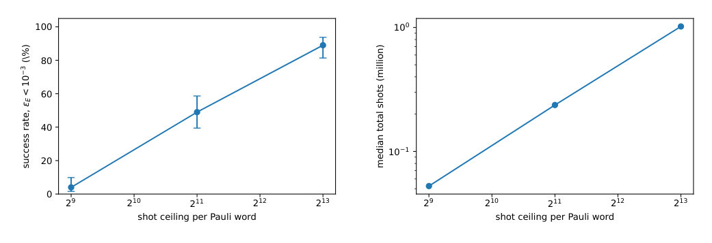
<figcaption class="paper-figure-caption"><b>Fig 4.</b> FIG. 3. Racing with a fixed base of 64 shots and a varying per-word ceiling. (a) Success probability with 95% Wilson intervals. (b) Median total measurements. The ceiling controls the smallest gradient separation that the ranking rule can resolve.</figcaption>
</figure>
</div>

<p><strong>Summary.</strong> This work presents a mathematically rigorous, operator-centric framework for variational quantum eigensolvers applied to systems like the Ising chain. It introduces an exact algebraic pruning rule and critically analyzes adaptive operator selection under realistic finite-shot measurement constraints. The findings demonstrate that advanced selection policies, particularly 'racing,' are crucial for achieving high accuracy with minimal experimental resources.</p>
<p><strong>Why it may be interesting.</strong> The rigorous mathematical formulation connecting Pauli words to Clifford algebra and deriving an exact pruning rule is highly valuable for developing scalable quantum simulation tools that can handle the complexity of large circuits while remaining computationally tractable.</p>
<details>
<summary>Detailed structure</summary>
<p><strong>Main problem.</strong> The paper addresses developing an efficient, operator-centric framework for variational quantum algorithms (VQE) while overcoming the practical bottleneck of selecting relevant operators from limited finite measurements.</p>
<p><strong>Main result.</strong> A systematic local odd-Y Pauli pool achieves extremely low relative energy errors ($<1.3 	imes 10^{-12}$) for small systems, and a 'racing' selection policy significantly improves measurement efficiency over fixed or uniform strategies in finite-shot tests.</p>
<p><strong>Method.</strong> It utilizes the complex Clifford algebra to represent quantum operators sparsely, derives an exact gradient rule based on Pauli word structure (transpose-parity rule), and compares multiple adaptive operator selection policies under noisy, finite-shot measurements.</p>
<p><strong>Model / system.</strong> The primary model tested is the open transverse-field Ising chain ($H = -\sum Z_j Z_{j+1} - h \sum X_j$) within the context of VQE. The formalism operates on $n$-qubit systems using Pauli words.</p>
<p><strong>Key observables.</strong> Relative energy error ($\epsilon_E$), ADAPT selection gradient components ($G_P$), and success rates/median shot counts for different selection policies.</p>
<p><strong>Important parameters / regimes.</strong> System size ($n=4, 5, 6$), measurement budget (finite shots), and the confidence interval parameter $\kappa$ used in selection heuristics.</p>
<p><strong>Assumptions / limitations.</strong> The analysis relies on an operator-centric algebraic formulation; finite-shot results are based on heuristic confidence bounds that do not guarantee coverage or account for full covariance.</p>
<p><strong>Figures summary.</strong> Figures compare performance metrics (median $\epsilon E$, IQR) across different selection strategies (Fixed, Uniform, Racing) as the measurement ceiling increases, showing 'racing' maintains high success rates with fewer shots.</p>
<p><strong>Paper structure.</strong> The paper first establishes the algebraic framework using Clifford algebra and derives pruning rules. It then applies this to the TFIM Hamiltonian for VQE ansatzes. The core contribution involves comparing selection policies (Fixed vs. Uniform vs. Racing) under finite-shot measurement constraints, culminating in quantitative performance summaries.</p>
</details>
<details>
<summary>Abstract</summary>
<p>We develop a sparse operator-centric realization of $n$-qubit variational quantum algorithms in the complex Clifford algebra $\mathrm{Cl}(2n,\mathbb{C}) \cong M(2^n,\mathbb{C})$. Density operators, gates, observables, channels, fermionic modes, and adaptive-selection observables are represented in one Pauli-word algebra, with the Jordan--Wigner map providing the exact bridge to anticommuting Clifford generators. We distinguish general Pauli-word rotations from Spin-group rotors and derive an exact transpose-parity rule: for real Hamiltonians and real states, every candidate Pauli word containing an even number of $Y$ factors has zero ADAPT gradient, while odd-$Y$ rotations preserve the real sector. For the critical open transverse-field Ising chain, a depth-three Hamiltonian variational ansatz gives relative energy errors $4.84\times10^{-5}$, $2.19\times10^{-3}$, and $3.67\times10^{-3}$ for $n=4,5,6$. A compact local ADAPT pool is exact at $n=4$ but leaves residual errors at larger sizes; a systematic contiguous three-local odd-$Y$ pool reaches relative errors below $1.3\times10^{-12}$ for $n\leq6$. In 100-seed finite-shot tests at $n=4$, fixed-shot selection succeeds in $0/100$ runs, whereas uniform escalation and confidence-bound racing each succeed in $84/100$ runs; racing lowers median shots by $34\%$. We claim no asymptotic speedup over matrix methods. The contribution is a corrected algebraic formulation, an exact pool-pruning rule, and a reproducible study of measurement-limited adaptive selection.</p>
</details>
<p><sub><a href="#top">↑ back to top</a></sub></p>

<p><a id="paper-2607.17319"></a></p>
<h3 id="constraints-on-recovering-quantum-information-after-erasure"><a href="http://arxiv.org/abs/2607.17319v1">Constraints on recovering quantum information after erasure</a></h3>
<p><strong>Authors:</strong> Mohammad A. Alhejji, Noah Lordi, Omkar Baraskar, Ariel Shlosberg, Emanuel Knill<br>
<strong>Type:</strong> theory · <strong>Category:</strong> quantum information and computing · <strong>PDF:</strong> <a href="https://arxiv.org/pdf/2607.17319v1">https://arxiv.org/pdf/2607.17319v1</a><br>
<strong>Analysis basis:</strong> full PDF text, analyzed in chunks
<strong>Topic relevance:</strong> <code>entanglement &amp; information structure</code> <strong>2/5</strong> · <code>correlated / nonlocal dissipation</code> <strong>1/5</strong> · <code>quantum measurements</code> <strong>1/5</strong></p>
<div class="figure-strip-hint">↔ Scroll figures horizontally</div>
<div class="paper-figures-scroll">
<figure class="paper-figure-card">
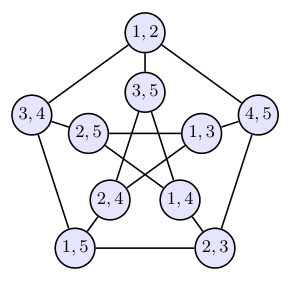
<figcaption class="paper-figure-caption"><b>Fig 1.</b> FIG. 1. The disjointness graph of the family of 2-sets in {1, 2, 3, 4, 5} is known as the Petersen graph. Its Lov´asz num- ber is 4 which equals the size of its largest independent set.</figcaption>
</figure>
<figure class="paper-figure-card">
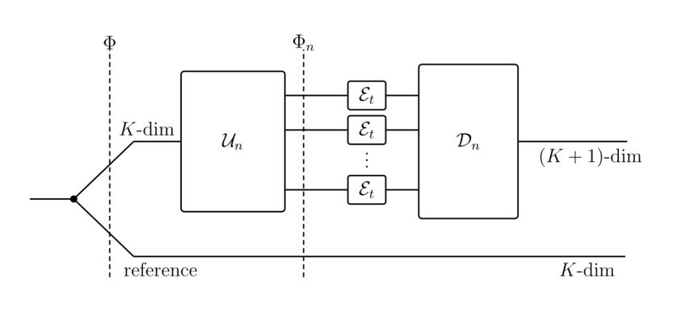
<figcaption class="paper-figure-caption"><b>Fig 2.</b> FIG. 2. A circuit depiction of the composite quantum channel DnE⊗n t Un applied to one half of the maximally entangled state Φ.</figcaption>
</figure>
<figure class="paper-figure-card">
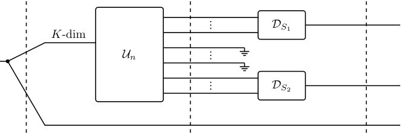
<figcaption class="paper-figure-caption"><b>Fig 3.</b> FIG. 3. A circuit depiction of the quantum channel B applied to one half of the maximally entangled state Φ giving rise to the tripartite state Γ.</figcaption>
</figure>
</div>

<p><strong>Summary.</strong> This paper investigates the mathematical limits on recovering quantum information when some physical carriers are lost due to an erasure channel. By deriving constraints based on no-cloning principles and graph theory, it proves a major conjecture about these channels. The findings show that physical realizability imposes stricter limitations than simple combinatorial bounds for systems with five or more carriers.</p>
<p><strong>Why it may be interesting.</strong> The work establishes fundamental, non-trivial bounds on quantum information processing capabilities under noise/erasure, which is crucial for designing robust quantum communication protocols.</p>
<details>
<summary>Detailed structure</summary>
<p><strong>Main problem.</strong> The paper determines the fundamental constraints on the probabilities with which quantum information can be perfectly recovered after arbitrary sets of physical carriers are erased.</p>
<p><strong>Main result.</strong> It proves a conjecture regarding quantum erasure channels by establishing new no-cloning constraints, showing that for $n>4$, realizable recovery probabilities ($Q_n$) are strictly smaller than the set defined only by disjointness constraints ($T_n$).</p>
<p><strong>Method.</strong> The analysis combines concepts from quantum coding theory, graph theory (using Lovász numbers), and semidefinite programming (SDP) to derive necessary conditions for physical realizability.</p>
<p><strong>Model / system.</strong> The model involves encoding quantum information into $n$ physical carriers. The core mathematical object is the set $\mathcal{Q}_n$, which characterizes all possible probability tuples $(q_S)$ achievable by a quantum code under erasure channels.</p>
<p><strong>Key observables.</strong> Recovery probabilities $q_S$; the Lovász number $\vartheta(G_F)$; and bounds on sums of these probabilities (e.g., $\sum q_{\{i,j\}} \le \sqrt{5}$ for $n=5$).</p>
<p><strong>Important parameters / regimes.</strong> The number of carriers ($n$), the erasure probability ($t$), and the minimum distance ($d$) of the underlying quantum code.</p>
<p><strong>Assumptions / limitations.</strong> The analysis relies on assuming the encoding channel is isometric (without loss of generality) and uses techniques like SDP to derive upper bounds based on physical constraints.</p>
<p><strong>Figures summary.</strong> Figures illustrate circuits for composite quantum channels involving maximally entangled states, showing how recovery operations are modeled across multiple carriers.</p>
<p><strong>Paper structure.</strong> The paper progresses by first defining the set $\mathcal{Q}_n$ and comparing it to a simpler set $\mathcal{T}_n$. It then derives constraints using graph theory (Lovász number) and finally proves results for small $n$, culminating in proving the erasure-simulation conjecture.</p>
</details>
<details>
<summary>Abstract</summary>
<p>Suppose that we encode quantum information into $ n $ physical carriers. With what probabilities can we perfectly recover the quantum information after sets of carriers have been erased? This question arises in the study of quantum erasure channels, for which M.B. Hastings conjectured that if each carrier is independently erased with probability $ t \geq 1/2 $, then it is impossible to recover the quantum information with asymptotically vanishing error and probability $ &gt; 1-t $. We prove this conjecture by establishing new no-cloning constraints on realizable recovery probabilities.</p>
</details>
<p><sub><a href="#top">↑ back to top</a></sub></p>

<p><a id="paper-2607.17429"></a></p>
<h3 id="gpu-accelerated-finite-temperature-lanczos-method-for-heisenberg-spin-systems-with-non-abelian-permutation-symmetries"><a href="http://arxiv.org/abs/2607.17429v1">GPU-accelerated finite-temperature Lanczos method for Heisenberg spin systems with non-Abelian permutation symmetries</a></h3>
<p><strong>Authors:</strong> Shadan Ghassemi Tabrizi, Thomas D. Kühne<br>
<strong>Type:</strong> theory · <strong>Category:</strong> strongly correlated electrons · <strong>PDF:</strong> <a href="https://arxiv.org/pdf/2607.17429v1">https://arxiv.org/pdf/2607.17429v1</a><br>
<strong>Analysis basis:</strong> full PDF text, analyzed in chunks
<strong>Topic relevance:</strong> <code>analog quantum simulation</code> <strong>2/5</strong> · <code>exotic spin models in light-matter</code> <strong>1/5</strong> · <code>non-equilibrium dynamics</code> <strong>1/5</strong></p>
<div class="figure-strip-hint">↔ Scroll figures horizontally</div>
<div class="paper-figures-scroll">
<figure class="paper-figure-card">
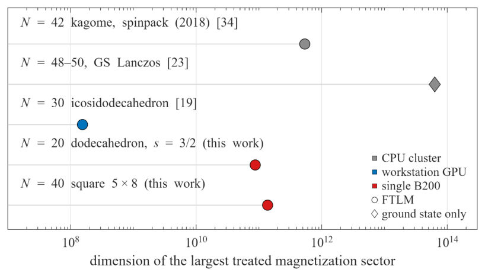
<figcaption class="paper-figure-caption"><b>Fig 1.</b> Figure 1: Dimension of the largest treated magnetization sector in representative large-scale spin-system</figcaption>
</figure>
<figure class="paper-figure-card">
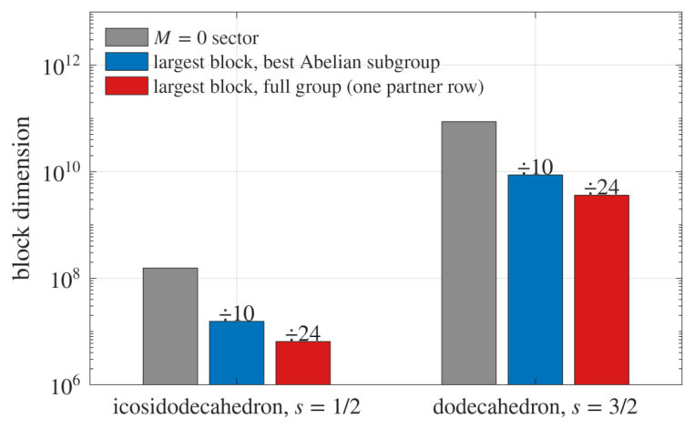
<figcaption class="paper-figure-caption"><b>Fig 2.</b> Figure 2: Block-size reduction by the full non-Abelian symmetry: for the 𝑀= 0 sectors of the 𝑠= 1/2 icosidodecahedron and the 𝑠= 3/2 dodecahedron, the sector dimension is compared with the largest block under the best Abelian subgroup of 𝐼ℎ (order 10) and with the largest single-partner-row block of the full group (Eq. (13)). For the dodecahedron the corresponding FP32 Lanczos vectors take 348 GB, 35 GB, and 14.5 GB, respectively.</figcaption>
</figure>
<figure class="paper-figure-card">
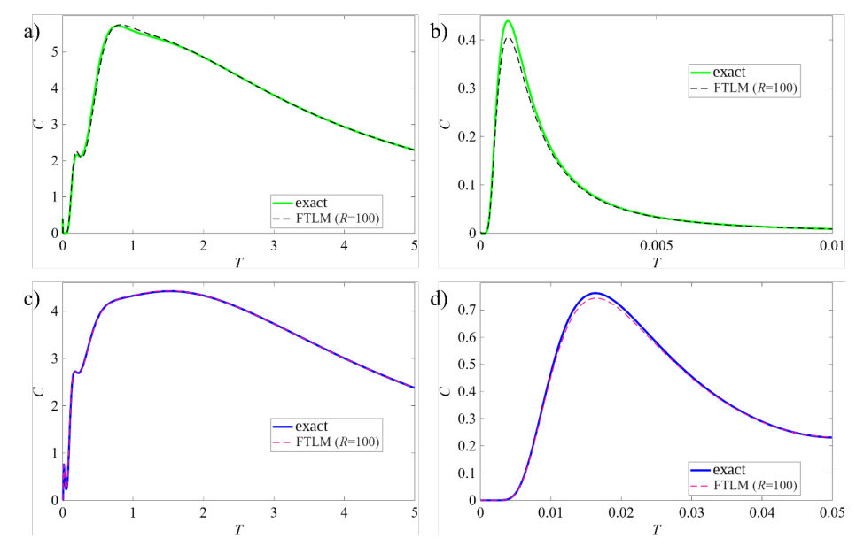
<figcaption class="paper-figure-caption"><b>Fig 3.</b> Figure 3: Heat capacity C(𝑇) of the 𝑠= 3/2 icosahedron (top row: panels (a) and (b)) and cuboctahedron (bottom row: panels (c) and (𝑑)), computed by full ED (data from Ref. [43]) and with the present FTLM code. The right-hand panels (b) and (𝑑) resolve the low-temperature peak.</figcaption>
</figure>
<figure class="paper-figure-card">

<figcaption class="paper-figure-caption"><b>Fig 4.</b> Figure 4: Heat capacity (left) and zero-field susceptibility (right) of the 𝑠= 3/2 icosahedron, computed with the</figcaption>
</figure>
<figure class="paper-figure-card">

<figcaption class="paper-figure-caption"><b>Fig 5.</b> Figure 5: Same-seed comparison of FP32 and FP16 vector storage in symmetry-adapted FTLM for the 𝑠= 3</figcaption>
</figure>
</div>

<p><strong>Summary.</strong> This paper presents a major advancement in simulating Heisenberg spin systems by extending the GPU-accelerated Finite-Temperature Lanczos Method (FTLM) to handle full non-Abelian permutation symmetries. By developing a matrix-free formalism, the authors drastically reduce memory requirements and successfully compute properties for massive quantum clusters previously deemed computationally intractable.</p>
<p><strong>Why it may be interesting.</strong> While focused on spin models (cond-mat.str-el), the development of highly efficient, scalable numerical techniques for strongly correlated quantum many-body systems is relevant to understanding complex dynamics in AMO physics simulations.</p>
<details>
<summary>Detailed structure</summary>
<p><strong>Main problem.</strong> The authors extend the finite-temperature Lanczos method (FTLM) to incorporate full permutation symmetry, including non-Abelian point and space groups, for Heisenberg spin systems.</p>
<p><strong>Main result.</strong> They successfully implemented a matrix-free formalism that exploits these symmetries, achieving significant computational reductions on large clusters like the dodecahedron using GPU acceleration.</p>
<p><strong>Method.</strong> The core method is a GPU-accelerated FTLM combined with advanced group theory techniques to block-diagonalize the Hamiltonian over symmetry sectors ($\Gamma$).</p>
<p><strong>Model / system.</strong> The study focuses on Heisenberg spin Hamiltonians ($H = J \sum_{\langle i,j
angle} (\mathbf{s}_i \cdot \mathbf{s}_j)$) applied to various cluster topologies, including icosahedral polyhedra and square lattices.</p>
<p><strong>Key observables.</strong> Magnetic susceptibility ($\chi$), heat capacity ($C$), and partition function ($Z$).</p>
<p><strong>Important parameters / regimes.</strong> Finite temperature ($eta = 1/k_B T$); spin values like $s=3/2$ and $s=1/2$; system sizes up to $\sim 10^{12}$ Hilbert space dimensions.</p>
<p><strong>Assumptions / limitations.</strong> The method is matrix-free, avoiding explicit storage of the projected Hamiltonian; it assumes the Hamiltonian action is independent of the trace estimator used in FTLM.</p>
<p><strong>Figures summary.</strong> Figure 1 compares symmetry sector dimension reduction across different computational platforms. Figure 2 compares block-size reductions for $s=1/2$ and $s=3/2$ polyhedra using various symmetry treatments.</p>
<p><strong>Paper structure.</strong> The paper builds upon previous work by extending the FTLM from simple total-magnetization symmetry to full permutation symmetry, detailing the matrix-free formalism and demonstrating its application on large systems using GPU acceleration.</p>
</details>
<details>
<summary>Abstract</summary>
<p>We extend a recent GPU implementation of the finite-temperature Lanczos method (FTLM) for Heisenberg spin Hamiltonians, which uses only total-magnetization symmetry, to the full permutation symmetry, including non-Abelian point and space groups. For highly symmetric clusters such as icosahedral polyhedra, the multidimensional irreducible representations (irreps) of the permutation group reduce the block dimensions substantially further than any Abelian subgroup. Here, we provide a matrix-free formalism (avoiding explicit storage of the projected Hamiltonian) for using such symmetries. The implementation applies equally to Abelian groups, retaining the advantages of GPU acceleration. Several cluster topologies are built in; beyond these, symmetry groups can be supplied as site-permutation generators, with irrep matrices computed automatically, so that user-defined clusters run without any code changes. We demonstrate the approach in production runs on a single NVIDIA B200 accelerator for the s=3/2 Heisenberg antiferromagnet on the dodecahedron (Hilbert-space dimension 4^20 ~ 1.1x10^12) and for the s=1/2 square lattice of 5x8 sites (M=0 dimension 1.4x10^11). With R=24 random vectors per symmetry block and 60 Lanczos steps, the dodecahedron campaign (with the largest iterated symmetry block having a dimension of 3.6x10^9) requires about 50 GPU-hours. The code is openly available under the Apache-2.0 license at https://github.com/ghasdeke/ftlm-pg-gpu, archived at DOI: 10.5281/zenodo.21445872.</p>
</details>
<p><sub><a href="#top">↑ back to top</a></sub></p>

<p><a id="paper-2607.16885"></a></p>
<h3 id="precision-dynamics-of-resonantly-enhanced-optical-parametric-amplifiers"><a href="http://arxiv.org/abs/2607.16885v1">Precision dynamics of resonantly enhanced optical parametric amplifiers</a></h3>
<p><strong>Authors:</strong> Evan D. Hall<br>
<strong>Type:</strong> theory · <strong>Category:</strong> other · <strong>PDF:</strong> <a href="https://arxiv.org/pdf/2607.16885v1">https://arxiv.org/pdf/2607.16885v1</a><br>
<strong>Analysis basis:</strong> full PDF text, analyzed in chunks
<strong>Topic relevance:</strong> <code>Keldysh / 2PI / non-Gaussian methods</code> <strong>1/5</strong> · <code>correlated cavity matter</code> <strong>1/5</strong> · <code>driven-dissipative phase transition</code> <strong>1/5</strong> · <code>interference shaping light</code> <strong>1/5</strong> · <code>methods for driven-dissipative</code> <strong>1/5</strong> · <code>non-equilibrium dynamics</code> <strong>1/5</strong> · <code>quantum optics experiment</code> <strong>1/5</strong></p>
<div class="figure-strip-hint">↔ Scroll figures horizontally</div>
<div class="paper-figures-scroll">
<figure class="paper-figure-card">

<figcaption class="paper-figure-caption"><b>Fig 1.</b> FIG. 1. Resonant optical parametric amplifier formed of a quadratically nonlinear crystal (X) and four mirrors, similar to the amplifier used in Advanced LIGO [40–42]. Mirrors 1 and 2 are partially transmissive, and mirrors 3 and 4 are assumed to be perfectly reflecting. Ingoing and outgoing sideband fields for the fundamental modes are indicated. The length l12 covers the distance from mirror 1 to mirror 2; l1X covers the distance from mirror 1 to the flat face of the crystal; l2X covers the distance from mirror 2 to the wedged face of the crystal; and lX covers the physical distance through the crystal excluding the wedge. We have drawn the optical loss in the crystal as a single...</figcaption>
</figure>
<figure class="paper-figure-card">

<figcaption class="paper-figure-caption"><b>Fig 2.</b> FIG. 2. The cavity poles sP± in their full (Eq. (39)) and approximate (Eq. (40)) expressions, using the parameters in Table I but allowing the nonlinear coupling to vary. Because sP−→0 as x →1 in both the full and approximate expres- sions, the error in the approximation also approaches 0.</figcaption>
</figure>
<figure class="paper-figure-card">

<figcaption class="paper-figure-caption"><b>Fig 3.</b> FIG. 3. The exact and approximate forms of the dc internal gain G(0). The upper element G11(0) approaches ∞as x →1, both in the exact and approximate forms, and the approxima- tion error goes to 0.</figcaption>
</figure>
<figure class="paper-figure-card">

<figcaption class="paper-figure-caption"><b>Fig 4.</b> FIG. 4. Input–output relations for the internal gain (left; § V A 1) and reflection (right; § V C) for a resonant optical parametric amplifier with parameters given in Table I, showing the unique entries for both the sideband representations G and R and the quadrature representations G and R. The relations are plotted at a small but nonzero pump phase (ψb = 3 mrad) to exhibit cross-coupling of the quadratures. Solid lines show the exact expressions; dotted lines show the Pad´e expansions into zero–pole–gain form and with approximations for small decay and gain rates. The zeros at s = −2/τa contribute nonnegligibly to the phase response of G and G above 10 MHz. Also shown is the passive...</figcaption>
</figure>
<figure class="paper-figure-card">

<figcaption class="paper-figure-caption"><b>Fig 5.</b> FIG. 5. Left: amplified finesse in its exact expression (solid, Eq. (36)) and in the leading-order rate approximation (dotted; Eq. (37)). Right: nonlinear gain in its exact expression (solid; Eq. (73)) and in the leading-order rate approximation (dotted; Eq. (76)). The quantities are plotted as a function of both −ln r = κτa (the decay rate relative to the cavity free spectral range) and the nonlinear interaction Γ relative to threshold Γ⋆. The limitations of the leading-order rate approximation are evident for large values of −ln r. The indicated point corresponds to the amplifier considered in Table I.</figcaption>
</figure>
</div>

<p><strong>Summary.</strong> This paper develops a rigorous frequency-domain model for optical parametric amplifiers integrated into resonant cavities, crucial for applications like gravitational-wave detectors. By solving input-output relations directly, the authors capture full cavity dynamics, providing advanced characterization methods beyond static analyses. This advances the theoretical toolkit for modeling quantum light sources in high-finesse optical systems.</p>
<p><strong>Why it may be interesting.</strong> This work is highly relevant as it tackles open quantum systems dynamics (OPAs) by developing advanced theoretical tools (frequency-domain transfer functions) necessary for modeling high-precision quantum measurements like gravitational wave detection.</p>
<details>
<summary>Detailed structure</summary>
<p><strong>Main problem.</strong> The work develops a comprehensive frequency-domain model for resonantly enhanced optical parametric amplifiers (OPAs) that fully incorporates complex cavity dynamics, moving beyond simpler Hamiltonian formalisms.</p>
<p><strong>Main result.</strong> The direct input-output relation approach yields frequency-dependent transfer functions that provide complementary characterization methods compared to static measurements of amplifier performance.</p>
<p><strong>Method.</strong> The authors solve the input-output relations directly in the frequency domain by modeling field propagation through the cavity, and they derive low-order zero-pole-gain expansions for analysis.</p>
<p><strong>Model / system.</strong> The physical system is an OPA used in gravitational-wave interferometry, where the amplifier is coupled to an optical cavity. The model tracks input, circulating, and output optical fields using frequency-domain transfer functions.</p>
<p><strong>Key observables.</strong> Input–output relations (transfer functions), amplifier figures of merit, squeezed quadrature variances, and frequency dependence of these relations.</p>
<p><strong>Important parameters / regimes.</strong> Cavity decay rates, free spectral range effects, and the detuning parameters ($\Phi_a, \Phi_b$) governing resonance conditions.</p>
<p><strong>Assumptions / limitations.</strong> The analysis compares results derived from a direct field-tracking method against those from standard Hamiltonian formalisms, noting that the direct method is necessary to capture finite free spectral range dynamics.</p>
<p><strong>Figures summary.</strong> Figure 1 illustrates the resonant OPA setup detailing various optical paths and coupling elements; other figures likely show frequency dependence plots of transfer functions or gain.</p>
<p><strong>Paper structure.</strong> The paper progresses by first establishing the necessity of a full cavity model, deriving the input-output relations in the frequency domain, providing low-order expansions for control analysis, analyzing key performance metrics, and comparing results to established Hamiltonian formalisms.</p>
</details>
<details>
<summary>Abstract</summary>
<p>Optical parametric amplification is a crucial technology for the production of continuous-wave squeezed vacuum, which is now applied to gravitational-wave interferometry and other highly sensitive measurements of optical phase. The amplifiers employed in gravitational-wave detection are resonantly enhanced with optical cavities, which introduces nontrivial dynamics to their operation and requires a frequency-domain model of the relations between optical fields. In this work, input-output relations between optical fields entering, circulating in, and exiting a model amplifier are solved directly to produce frequency-domain relations that fully incorporate the cavity dynamics. We also provide low-order zero-pole-gain expansions for these relations to facilitate their analysis from a feedback control perspective. In the limit of small cavity decay rates, our relations are shown to reduce to relations previously derived under a Hamiltonian formalism. Expressions for amplifier figures of merit and for squeezed quadrature variances are also analyzed. Along the way, we examine how information about the amplifier performance can be extracted from the frequency dependence of the input-output relations, providing characterization methods that are complementary to methods that examine the static amplifier behavior.</p>
</details>
<p><sub><a href="#top">↑ back to top</a></sub></p>

<p><a id="paper-2607.18179"></a></p>
<h3 id="semi-fractality-and-localization-on-a-chiral-cayley-tree"><a href="http://arxiv.org/abs/2607.18179v1">Semi-fractality and localization on a chiral Cayley tree</a></h3>
<p><strong>Authors:</strong> Carlo Vanoni, Vladimir E. Kravtsov, Boris L. Altshuler<br>
<strong>Type:</strong> theory · <strong>Category:</strong> disordered systems and neural networks · <strong>PDF:</strong> <a href="https://arxiv.org/pdf/2607.18179v1">https://arxiv.org/pdf/2607.18179v1</a><br>
<strong>Analysis basis:</strong> full PDF text, analyzed in chunks
<strong>Topic relevance:</strong> <code>Keldysh / 2PI / non-Gaussian methods</code> <strong>1/5</strong> · <code>analog quantum simulation</code> <strong>1/5</strong> · <code>correlated / nonlocal dissipation</code> <strong>1/5</strong> · <code>driven-dissipative phase transition</code> <strong>1/5</strong> · <code>methods for driven-dissipative</code> <strong>1/5</strong> · <code>non-equilibrium dynamics</code> <strong>1/5</strong></p>
<div class="figure-strip-hint">↔ Scroll figures horizontally</div>
<div class="paper-figures-scroll">
<figure class="paper-figure-card">

<figcaption class="paper-figure-caption"><b>Fig 1.</b> FIG. 1. Schematic representation of the distribution of the LDoS, based on the population dynamics result (see Sec. IV). The small-ρ regime is described by a power-law ρβ+1−γ, while the large-ρ regime is described by ρ−(β+1).</figcaption>
</figure>
<figure class="paper-figure-card">

<figcaption class="paper-figure-caption"><b>Fig 2.</b> FIG. 2. Top panel: comparison between P(ρ) (black) and ργP(1/ρ) (red) for a = 0 and E = 0. The collapse of the two curves signals the validity of Eq. (15) for γ(a = 0) = 2.44, a value obtained from fitting the power-law tails of the LDoS distribution. Bottom panel: same comparison for a = 0 and E = 2. Away from E = 0, there is no chiral symmetry and the Dyson γ = 3 value is restored, with the LDoS distribution not displaying two power-law tails at small and large ρ.</figcaption>
</figure>
<figure class="paper-figure-card">

<figcaption class="paper-figure-caption"><b>Fig 3.</b> FIG. 4. Distribution function of the LDoS P(ρ) at different values of a.</figcaption>
</figure>
<figure class="paper-figure-card">

<figcaption class="paper-figure-caption"><b>Fig 4.</b> FIG. 3. Top panel: Example of a semi-fractal Dq with β = 1.5. The solid line corresponds to Dq with the rare events with large wave function amplitudes (shown by the dashed line in the inset) taken into account, while the dashed line corresponds to Dq deduced from the typical average of the moments. In the inset, the corresponding spectrum of fractal dimensions is shown, which has a linear segment f(α) = β(α− 1)+1 with the slope β = 1.5 for α &lt; 1 and the reciprocal linear segment with the slope γ −β −2 = −1.4 that corresponds to the Mirlin-Fyodorov symmetry with γ = 2.1. Bottom panel: Dq for β &lt; 1, corresponding to the localized case. The inset shows the corresponding f(α).</figcaption>
</figure>
<figure class="paper-figure-card">

<figcaption class="paper-figure-caption"><b>Fig 5.</b> FIG. 5. LDoS distribution for a = −1, 0, 0.5 (from left to right), with the power-law fits at ρ ≪1 and ρ ≫1 indicated in blue and red, respectively.</figcaption>
</figure>
</div>

<p><strong>Summary.</strong> The paper analyzes quantum particle hopping on a chiral Cayley tree with power-law disorder, revealing novel phases of eigenfunction statistics. It demonstrates that the system transitions between 'semi-fractal' and localized states as a function of the disorder exponent '$a$'. This transition is fundamentally linked to the preservation of chiral symmetry.</p>
<p><strong>Why it may be interesting.</strong> This work provides a detailed theoretical framework connecting graph topology (Cayley tree), specific symmetries (chiral symmetry), and emergent wave function statistics (semi-fractality/localization) in disordered quantum systems, which is highly relevant to understanding transport in complex media.</p>
<details>
<summary>Detailed structure</summary>
<p><strong>Main problem.</strong> The study investigates the nature of quantum wave function statistics—specifically semi-fractality and localization—for a particle hopping on an infinite Cayley tree.</p>
<p><strong>Main result.</strong> The system exhibits a continuous transition between a 'semi-fractal' regime (characterized by power-law tails in LDoS) and a localized state, mediated by the chiral symmetry of the Hamiltonian.</p>
<p><strong>Method.</strong> The analysis employs population dynamics to solve cavity equations for the propagator, relating moments of the Local Density of States ($\langle 
ho^q 
angle$) to those of wave function amplitudes ($\langle |\psi|^{2q} 
angle$).</p>
<p><strong>Model / system.</strong> The model is a quantum particle hopping on an infinite Cayley tree with nearest-neighbor hopping amplitudes drawn from a power-law distribution $p(t) \propto |t|^{-a}$, possessing chiral symmetry due to the graph's bipartite nature.</p>
<p><strong>Key observables.</strong> Local Density of States (LDoS) distribution, fractal dimensions ($D_q$), and the multifractal spectrum $f(\alpha)$.</p>
<p><strong>Important parameters / regimes.</strong> The hopping exponent '$a$' acts as a tuning parameter controlling the transition between regimes; chiral symmetry is crucial.</p>
<p><strong>Assumptions / limitations.</strong> The analysis assumes the system maintains chiral symmetry (zero energy, link disorder only) and uses approximations relating LDoS moments to wave function moment averages.</p>
<p><strong>Figures summary.</strong> Figures illustrate the dependence of fractal dimensions ($D_q$) on the exponent $a$, showing distinct behaviors for semi-fractal ($eta>1$) versus localized ($eta<1$) regimes.</p>
<p><strong>Paper structure.</strong> The paper establishes a relationship between LDoS moments and wave function moments, derives explicit formulas for $D_q$ in different parameter regimes ($eta$), and discusses the physical interpretation of these fractal structures via eigenstate weight hierarchies.</p>
</details>
<details>
<summary>Abstract</summary>
<p>We study a quantum particle hopping on an infinite Cayley tree with nearest-neighbor hopping amplitudes drawn from a distribution singular as $|t|^{-a}$ near weak links and no on-site disorder. Because the graph is bipartite, the model has chiral symmetry, which strongly affects the statistics of eigenstates at the center of the spectrum. Using population dynamics to solve the cavity equations for the propagator, we analyze the distribution of the local density of states and show that it develops broad power-law tails. These tails imply an unusual form of wave-function statistics, which we call semi-fractality: the eigenstates occupy an extensive fraction of the system, but their higher moments behave as in a multifractal state. We find that the symmetry properties of the local-density-of-states distribution are not fixed only by the symmetry class, but vary continuously with the exponent controlling the power-law hopping distribution. As this exponent is changed, the system crosses from a semi-fractal regime to a localized one. At the transition, the wave functions realize an extreme intermediate form that we call semi-localized, simultaneously extended in their support but localized according to higher moments.</p>
</details>
<p><sub><a href="#top">↑ back to top</a></sub></p>

<p><a id="paper-2607.18094"></a></p>
<h3 id="symmetry-based-microscopic-theory-of-the-unconventional-pairing-mechanism-in-lamath1243mathnimath1244mathomath1245math"><a href="http://arxiv.org/abs/2607.18094v1">Symmetry-Based Microscopic Theory of the Unconventional Pairing Mechanism in La$_5$Ni$_3$O$_{11}$</a></h3>
<p><strong>Authors:</strong> Guan-Hao Feng, Jun Quan<br>
<strong>Type:</strong> theory · <strong>Category:</strong> strongly correlated electrons · <strong>PDF:</strong> <a href="https://arxiv.org/pdf/2607.18094v1">https://arxiv.org/pdf/2607.18094v1</a><br>
<strong>Analysis basis:</strong> full PDF text, analyzed in chunks
<strong>Topic relevance:</strong> <code>Keldysh / 2PI / non-Gaussian methods</code> <strong>1/5</strong> · <code>analog quantum simulation</code> <strong>1/5</strong> · <code>driven-dissipative phase transition</code> <strong>1/5</strong> · <code>methods for driven-dissipative</code> <strong>1/5</strong></p>
<div class="figure-strip-hint">↔ Scroll figures horizontally</div>
<div class="paper-figures-scroll">
<figure class="paper-figure-card">

<figcaption class="paper-figure-caption"><b>Fig 1.</b> Figure 1. (a) Crystal structure of La5Ni3O11 in the P4/mmm space group drawn using VESTA [64]. The crystal structure of La5Ni3O11 is adopted from Ref. [10], corresponding to a pressure of 21 GPa. (b)–(c) Layer-resolved BS and FS.</figcaption>
</figure>
<figure class="paper-figure-card">

<figcaption class="paper-figure-caption"><b>Fig 2.</b> Figure 2. (a) Imaginary part of the Matsubara self-energies of the site-resolved local Ni-eg orbitals. (b) Contribution of the ML and BL systems to the QP BS after renormaliza- tion. (c) Comparison between the QP FS and the spectral function A(k, 0). (d) Comparison between the QP BS and A(k, w) for the whole system. (e) Orbital-resolved correlated FS Aσ,σ(k, 0). (f) Orbital contribution to the QP FS and (g) BS of the BL subsystem. The filling n = 1.46 per Ni-eg orbitals demonstrates that the BL subsystem is hole-doped relative to the undoped filling of n = 1.5.</figcaption>
</figure>
<figure class="paper-figure-card">

<figcaption class="paper-figure-caption"><b>Fig 3.</b> Figure 3. (a) Minimum BCS condensation energy of symmetry-allowed pairing types at Tc ≈64 K. (b) Tc as a function of the two-gap superconductivity parameters. The yellow star marks {Vsz2 , Vsx2+y2 } = {0.209, 0.177} eV, which minimizes the condensation energy at Tc ≈64 K. (c) Su- perconducting BS calculated at the marked parameters, with {∆sz2 , ∆sx2+y2 } = {9.4, 7.1} meV, yielding gap sizes of ∼ 12.1 and 9.4 meV at the β and γ pockets along Γ-M, respec- tively. (d) DOS of the superconducting state. (e) Projected gap functions ˜∆tot = ˜∆sz2 + ˜∆sx2+y2 on the QP FS.</figcaption>
</figure>
<figure class="paper-figure-card">

<figcaption class="paper-figure-caption"><b>Fig 4.</b> Figure 4. RPA results. (a) Total and orbital-projected bare static susceptibilities χ0(iω0, k) at T = 116 K along the high- symmetry path. (b) Total χ0(iω0, k) in the 2D BZ. (c) The eigenvalues λ of the linearized Eliashberg equation calculated with JH = J′ = 0.15U and U ′ = U −2JH. (d) Gap function at U = 0.5 eV for the leading superconducting instabilities, which exhibit s±-wave symmetry.</figcaption>
</figure>
</div>

<p><strong>Summary.</strong> This work develops a symmetry-based microscopic theory to explain superconductivity in nickelates. It finds that La5Ni3O11 exhibits a two-gap superconducting state, attributing the lower $T_c$ compared to related materials to changes in orbital hopping ratios. The methodology combines advanced electronic structure calculations with rigorous group-theoretical analysis of pairing symmetries.</p>
<p><strong>Why it may be interesting.</strong> While focused on solid-state physics, the use of symmetry constraints and mean-field approaches to determine pairing instabilities is relevant for understanding emergent order parameters in complex quantum systems.</p>
<details>
<summary>Detailed structure</summary>
<p><strong>Main problem.</strong> To develop a unified microscopic theory explaining the difference in superconducting pairing mechanisms between nickelate superconductors like La5Ni3O11 and pressurized La3Ni2O7.</p>
<p><strong>Main result.</strong> The superconductivity in La5Ni3O11 is characterized by a two-gap nature, involving leading interlayer pairing ($d_{z^2}$) and subleading intralayer pairing ($d_{x^2-y^2}$), with the reduction of Tc attributed to the hopping parameter ratio $|t_{\perp}^z/t_{\parallel}^{x}|$.</p>
<p><strong>Method.</strong> The study employs a symmetry-based approach combined with advanced many-body techniques, including DFT+DMFT and analysis via the Bogoliubov-de Gennes Hamiltonian.</p>
<p><strong>Model / system.</strong> The system is based on nickelate superconductors (e.g., La5Ni3O11), modeled using an effective quasiparticle Hamiltonian derived from strong correlation physics involving Ni-$e_g$ orbitals.</p>
<p><strong>Key observables.</strong> Superconducting transition temperature ($T_c$), superconducting gap structure ($\Delta_{sz^2}$ vs $\Delta_{sx^2+y^2}$), and the hopping parameter ratio $|t_{\perp}^z/t_{\parallel}^{x}|$.</p>
<p><strong>Important parameters / regimes.</strong> $T_c \approx 64$ K for La5Ni3O11; $T_c = 80$ K for pressurized La3Ni2O7.</p>
<p><strong>Assumptions / limitations.</strong> The low-energy physics is dominated by Ni-$e_g$ orbitals, and the pairing mechanism can be analyzed using symmetry constraints on the gap function.</p>
<p><strong>Paper structure.</strong> The paper systematically develops a theoretical framework starting from DFT+DMFT calculations to analyze the low-energy physics, determining the superconducting state via minimizing the free energy functional derived from the BdG Hamiltonian.</p>
</details>
<details>
<summary>Abstract</summary>
<p>Recent experiments report high-temperature superconductivity in the hybrid nickelate $\mathrm{La}_5\mathrm{Ni}_3\mathrm{O}_{11}$, which is composed of alternating stacks of bilayer $\mathrm{La}_3\mathrm{Ni}_2\mathrm{O}_7$ and monolayer $\mathrm{La}_2\mathrm{NiO}_4$. However, the superconducting transition temperature $T_c \approx 64~\mathrm{K}$ for $\mathrm{La}_5\mathrm{Ni}_3\mathrm{O}_{11}$ is remarkably lower than the $80~\mathrm{K}$ observed for pressurized $\mathrm{La}_3\mathrm{Ni}_2\mathrm{O}_7$. Thus, an unified microscopic theory is required to address the difference in the pairing mechanisms between these systems. Here, we develop a phenomenological symmetry-based approach to systematically analyze the low-energy physics in $\mathrm{La}_5\mathrm{Ni}_3\mathrm{O}_{11}$, which is obtained by a charge self-consistent density functional theory plus dynamical mean-field theory method. We show that the superconductivity in $\mathrm{La}_5\mathrm{Ni}_3\mathrm{O}_{11}$ exhibits a two-gap nature, consisting of a leading interlayer pairing between the $d_{z^2}$ orbitals and a subleading intralayer pairing between the $d_{x^2-y^2}$ orbitals. The reduction of $T_c$ can be attributed to the diminished contribution of the interlayer pairing, as reflected by the hopping parameter ratio $|t_{\perp}^z/t_{\parallel}^{x}|$. Base on this unified picture, we discuss the possible pairing mechanism and the role of $γ$ pocket for the superconductivity in the bilayer NiO$_2$ planes of nickelate superconductors.</p>
</details>
<p><sub><a href="#top">↑ back to top</a></sub></p>

<p><a id="paper-2607.16689"></a></p>
<h3 id="unconventional-superconductivity-in-scirmath1273math-chiral-crystal-with-a-kagome-lattice"><a href="http://arxiv.org/abs/2607.16689v1">Unconventional superconductivity in ScIr$_2$ chiral crystal with a kagome lattice</a></h3>
<p><strong>Authors:</strong> Keqi Xia, Jianzhou Zhao, Igor Plokhikh, Marisa Medarde, Yang Xu, Qingfeng Zhan, Dariusz Jakub Gawryluk, Toni Shiroka, Tian Shang<br>
<strong>Type:</strong> both · <strong>Category:</strong> strongly correlated electrons · <strong>PDF:</strong> <a href="https://arxiv.org/pdf/2607.16689v1">https://arxiv.org/pdf/2607.16689v1</a><br>
<strong>Analysis basis:</strong> full PDF text, analyzed in chunks
<strong>Topic relevance:</strong> <code>Kondo &amp; dissipative impurity</code> <strong>1/5</strong> · <code>analog quantum simulation</code> <strong>1/5</strong> · <code>exotic spin models in light-matter</code> <strong>1/5</strong> · <code>spintronics-quantum-optics interface</code> <strong>1/5</strong></p>
<div class="figure-strip-hint">↔ Scroll figures horizontally</div>
<div class="paper-figures-scroll">
<figure class="paper-figure-card">

<figcaption class="paper-figure-caption"><b>Fig 1.</b> Figure 1. Phase diagram and crystal structure. a) Superconducting phase diagram of ScIr2−xSix (0 ≤x ≤0.35). Superconducting transition temperatures determined from the specific heat Cp were taken from Ref. [51]. Note that, previously the same compound was dubbed Sc2Ir4−xSix (0 ≤x ≤0.7) [51], where the nominal Si concentrations were used. b) Temperature-dependent electrical resistivity ρ(T) (left axis) and its derivative with respect to temperature dρ(T)/dT (right axis) for ScIr2 and ScIr1.82Si0.18, respectively. For clarity, the electrical resistivity data are normalized to their room-temperature value. The arrow marks a structural phase transition at TS ≈190 K in ScIr2. c-e) Refinements of...</figcaption>
</figure>
<figure class="paper-figure-card">

<figcaption class="paper-figure-caption"><b>Fig 2.</b> Figure 2. Characterization of superconductivity. a) Temperature-dependent magnetic susceptibility χ(T) for ScIr2 and ScIr1.82Si0.18. Magnetic susceptibility data were collected using both field-cooled (FC) and zero-field-cooled (ZFC) protocols in an applied magnetic field of 1 mT. Magnetic susceptibility data were normalized to their lowest-temperature value. b) Upper critical fields Hc2 of ScIr2 and ScIr1.82Si0.18. The inset shows the temperature-dependent electrical resistivity ρ(T) collected under different magnetic fields for ScIr2, with ScIr1.82Si0.18 showing similar features. The symbols in the main panel represent the superconducting transition temperature Tc, where the electrical...</figcaption>
</figure>
<figure class="paper-figure-card">

<figcaption class="paper-figure-caption"><b>Fig 3.</b> Figure 3. Exploring the superconducting pairing via TF-µSR. a,b) TF-µSR spectra collected in the superconducting and normal states in an applied magnetic field of 30 mT for ScIr2 (a) and ScIr1.82Si0.18 (b). All the spectra were collected using a FC protocol. Solid lines through the data are fits to Eq. (1). c,d) FFT of the relevant µSR spectra in panels (a) and (b) for ScIr2 (c) and ScIr1.82Si0.18 (d). e,f) Superfluid density [ρsc(T) ∝λ−2 eff (T)] as a function of the reduced temperature T/Tc for ScIr2 (e) and ScIr1.82Si0.18 (f). The upper insets plot temperature-dependent diamagnetic shift ∆Bdia. Here, ∆Bdia = Bs - Bappl, with Bs the local field sensed by implanted muons in the sample and...</figcaption>
</figure>
<figure class="paper-figure-card">

<figcaption class="paper-figure-caption"><b>Fig 4.</b> Figure 4. Electronic specific heat. a,b) Normalized electronic specific heat Ce/γnT as a function of the reduced temperature T/Tc for ScIr2 (a) and ScIr1.82Si0.18 (b). The different lines represent fits to the various models, analogous to those used to analyze the superfluid density in Figure 3e,f (see text for details). The derived fit parameters are also listed in Table 1. Zero-field specific heat data were taken from Ref. [51]. Note that, the extra phases observed in previous studies alsoresulted in lower actual Si concentrations in the doped ScIr2 samples. Since the same method was used to prepare the ScIr1−xSix samples, comparable Si concentrations are expected in both cases. For...</figcaption>
</figure>
<figure class="paper-figure-card">

<figcaption class="paper-figure-caption"><b>Fig 5.</b> Figure 5. Preserved TRS in the superconducting state of ScIr2−xSix. a,b) ZF-µSR spectra of ScIr2 (a) and ScIr1.82Si0.18 (b), collected in their superconducting (0.3 K) and normal (2 and 4 K) states. Solid lines through the data are fits to Eq. (2) using the Kubo-Toyabe relaxation function.</figcaption>
</figure>
</div>

<p><strong>Summary.</strong> This paper reports evidence for unconventional superconductivity in the kagome lattice material $  ext{ScIr}_{2-x} ext{Si}_x$. By combining muon-spin spectroscopy, specific heat measurements, and structural analysis, the authors determine that the SC pairing symmetry is best described by a two-gap $(s+d)$-wave model. The research highlights how topological features and strong electronic correlations govern these unusual superconducting properties.</p>
<p><strong>Why it may be interesting.</strong> This work is highly relevant as it tackles unconventional SC in a strongly correlated material class (iridates) where topological features (chiral crystal, flat bands) are expected to dictate exotic quantum behavior. The combination of structural, magnetic, and superconducting characterization is state-of-the-art.</p>
<details>
<summary>Detailed structure</summary>
<p><strong>Main problem.</strong> The study investigates unconventional superconductivity (SC) in $ ext{ScIr}_{2-x} ext{Si}_x$, a material featuring a kagome lattice structure, by analyzing the interplay between band topology, spin-orbit coupling, and electronic correlations.</p>
<p><strong>Main result.</strong> Evidence strongly suggests an unconventional SC pairing symmetry described by a two-gap $(s+d)$-wave model. Furthermore, the low-temperature phase is identified as a topological chiral crystal.</p>
<p><strong>Method.</strong> The research combines multiple experimental techniques—including muon-spin spectroscopy ($\mu$SR), specific heat measurements, and electrical transport—with theoretical calculations like DFT band structure analysis.</p>
<p><strong>Model / system.</strong> The physical system is the $    ext{ScIr}_{2-x} ext{Si}_x$ compound, which possesses a structural phase transition from a high-T cubic to a low-T rhombohedral phase. The kagome lattice and strong electronic correlations are central to its exotic properties.</p>
<p><strong>Key observables.</strong> Superconducting gap structure (two-gap model), superconducting critical temperature ($T_c$), upper critical fields ($H_{c2}$), magnetic penetration depth ($\lambda_{	ext{eff}}(T)$), and electronic specific heat ($C_e/T$).</p>
<p><strong>Important parameters / regimes.</strong> The doping concentration $x$ in $  ext{ScIr}_{2-x} ext{Si}_x$, the structural transition temperature $T_S \approx 190	ext{ K}$, and the superconducting pairing symmetry.</p>
<p><strong>Assumptions / limitations.</strong> The analysis relies on fitting experimental data ($\lambda^{-2}_{	ext{eff}}(T)$ and $C_e/T$) to various theoretical gap models (s, p, d, s+d) to determine the best fit for the pairing mechanism.</p>
<p><strong>Figures summary.</strong> Figures illustrate the superconducting phase diagram, structural transitions via SXRD, magnetic characterization ($\chi(T)$, $H_{c2}$), and detailed analysis of SC symmetry using $\mu$SR spectra and specific heat data.</p>
<p><strong>Paper structure.</strong> The paper systematically characterizes the material's structure (phase transition, chiral lattice) before moving to a comprehensive investigation of superconductivity. This involves determining $T_c$, analyzing magnetic responses ($\mu$SR), and finally modeling the pairing symmetry using multiple thermodynamic and spectroscopic probes.</p>
</details>
<details>
<summary>Abstract</summary>
<p>Materials with a kagome lattice host exotic quantum phenomena driven by the interplay between band topology, spin-orbit coupling, magnetism, and electronic correlations. While magnetism of kagome materials has been widely investigated, their unconventional superconductivity (SC) remains largely unexplored due to the limited availability of suitable materials. Here, we report evidence of unconventional SC in the ScIr$_{2-x}$Si$_{x}$ family by combining muon-spin spectroscopy measurements with band-structure calculations. The parent ScIr$_2$ undergoes a structural phase transition from a high-$T$ cubic- to a low-$T$ rhombohedral phase, while the Ir kagome layer remains, albeit slightly distorted. Although the structural transition is suppressed by Si substitution, the superconducting pairing of ScIr$_{2-x}$Si$_{x}$ remains well described by a two-gap model. Since at least one of the gaps has nodes, this indicates an unconventional SC. Its unconventional nature can be explained by the distinct flat bands occurring near the Fermi level, leading to strong electronic correlations in the ScIr$_{2-x}$Si$_{x}$ family. Moreover, the low-$T$ phase of ScIr$_2$ exhibits an Ir chiral chain; therefore, it can be classified as a topological chiral crystal. Overall, the unusual properties of the ScIr$_{2-x}$Si$_{x}$ family make it an interesting, albeit rare, system for studying the interplay between unconventional SC, flat bands, and chirality.</p>
</details>
<p><sub><a href="#top">↑ back to top</a></sub></p>

<p><a id="paper-2607.16735"></a></p>
<h3 id="approximate-thermodynamics-of-the-two-dimensional-ising-model-in-an-external-magnetic-field"><a href="http://arxiv.org/abs/2607.16735v1">Approximate thermodynamics of the two-dimensional Ising model in an external magnetic field</a></h3>
<p><strong>Authors:</strong> Mathieu Gaudreault<br>
<strong>Type:</strong> theory · <strong>Category:</strong> statistical mechanics · <strong>PDF:</strong> <a href="https://arxiv.org/pdf/2607.16735v1">https://arxiv.org/pdf/2607.16735v1</a><br>
<strong>Analysis basis:</strong> full PDF text, analyzed in chunks
<strong>Topic relevance:</strong> <code>Keldysh / 2PI / non-Gaussian methods</code> <strong>1/5</strong> · <code>analog quantum simulation</code> <strong>1/5</strong> · <code>driven-dissipative phase transition</code> <strong>1/5</strong></p>
<div class="figure-strip-hint">↔ Scroll figures horizontally</div>
<div class="paper-figures-scroll">
<figure class="paper-figure-card">

<figcaption class="paper-figure-caption"><b>Fig 1.</b> FIG. 1. Magnetization (M), susceptibility (χ), absolute value of the internal energy (|U|), and specific heat (C) of the two-dimensional Ising model as a function of the angle φa = arctan[sinh(2βH) exp(2βJ)]. Results obtained with the approximate expressions (lines) and nu- merical simulations of lattice sizes N = n×n where n = [20, 50] (symbols) are compared. The cases where J = 0.001 &lt; H = 0.01 (solid lines), J = H = 0.01 (dashed lines), and J = 0.01 &gt; H = 0.001 (dash-dotted lines) are shown. The legends apply to all plots.</figcaption>
</figure>
<figure class="paper-figure-card">

<figcaption class="paper-figure-caption"><b>Fig 2.</b> FIG. 2. Magnetization (M), susceptibility (χ), internal energy (U), and specific heat (C) of the two-dimensional Ising model shown as a function of the external magnetic field strength H. Results obtained with the approximate expressions (solid, dashed, and dash-dotted lines at T=0.4 (φa ≈0.05), 1 (φa ≈0.02), and 2 (φa ≈0.01), respectively) and numerical simulations of lattice sizes N = n × n where n = [20, 50] (symbols) are compared. The interaction energy is fixed at J = 0.01. The legends apply to all plots.</figcaption>
</figure>
<figure class="paper-figure-card">

<figcaption class="paper-figure-caption"><b>Fig 3.</b> FIG. 3. Susceptibility (χH=0) of the two-dimensional Ising model with H = 0 as a function of the reduced temperature T/J, where T is the temperature and J is the interaction energy between neighboring spins. Results obtained with the approximate expressions [small angle (dotted lines), mean-field theory (dashed lines), and perturbative expansion (dash-dotted lines)] and numerical simulations of lattice sizes N = n × n where n = [20, 50] (symbols) are shown. The temperature was varied for both values of J (J = 0.01 and J = 1) considered.</figcaption>
</figure>
<figure class="paper-figure-card">

<figcaption class="paper-figure-caption"><b>Fig 4.</b> FIG. 4. Magnetization (M1D), susceptibility (χ1D), absolute value of the internal energy (|U|1D), and specific heat (C1D) of the one-dimensional Ising model as a function of the angle φa = arctan[sinh(2βH) exp(2βJ)]. Results obtained with the approximate expressions (lines) and numerical simulations of a linear chain of size N = 500 (symbols) are compared. The cases where J = H = 0.01 (dash-dotted lines), and J = 0.01 &gt; H = 0.001 (dashed lines) are shown. The legends shown apply to all plots.</figcaption>
</figure>
<figure class="paper-figure-card">

<figcaption class="paper-figure-caption"><b>Fig 5.</b> FIG. 5. Magnetization (M1D), susceptibility (χ1D), internal energy (U 1D), and specific heat (C1D) of the one-dimensional Ising model obtained with the exact and approximate expressions (lines) and the numerical simulations of a linear chain of size N = [500, 1000] (symbols) as the external field strength H is varied. The temperature is fixed at T = 1. The legends shown apply to all plots.</figcaption>
</figure>
</div>

<p><strong>Summary.</strong> This paper develops approximate analytical expressions for the thermodynamics of the 2D Ising model under an external magnetic field by employing a quaternion representation and small-angle approximation. The derived results for energy, magnetization, and susceptibility are rigorously tested against numerical simulations using the BKL algorithm. It provides valuable insight into how mathematical approximations can successfully model complex physical systems when certain limiting conditions are met.</p>
<p><strong>Why it may be interesting.</strong> While focused on classical statistical mechanics, the use of quaternion algebra and advanced matrix diagonalization techniques mirrors mathematical tools used in quantum field theory or open quantum systems modeling, making it relevant for theoretical physics practitioners.</p>
<details>
<summary>Detailed structure</summary>
<p><strong>Main problem.</strong> The primary goal is deriving approximate analytical expressions for the thermodynamics of the two-dimensional Ising model when subjected to a non-zero external magnetic field.</p>
<p><strong>Main result.</strong> Approximate formulas are derived for key thermodynamic quantities (free energy, magnetization, susceptibility, etc.) which show excellent agreement with numerical simulations in regimes where the small-angle approximation is valid.</p>
<p><strong>Method.</strong> The method involves reformulating the model using a quaternion representation and applying a small-angle approximation to simplify the transfer matrix diagonalization.</p>
<p><strong>Model / system.</strong> The system studied is the two-dimensional Ising model on a square lattice, described by an Hamiltonian including nearest-neighbor interactions (J) and an external magnetic field (H).</p>
<p><strong>Key observables.</strong> Free Energy (F), Magnetization (M), Magnetic Susceptibility ($\chi$), Internal Energy (U), and Specific Heat (C).</p>
<p><strong>Important parameters / regimes.</strong> The analysis depends on the coupling constant $\phi = eta J$ and the external field parameter $\psi = eta H$, with validity requiring both to be small.</p>
<p><strong>Assumptions / limitations.</strong> The entire derivation hinges on the application of a small-angle approximation ($\varphi_a \ll 1$), which limits its applicability when $J$ or $H$ are large relative to $T$.</p>
<p><strong>Figures summary.</strong> Figures compare calculated thermodynamic quantities ($M, \chi, U, C$) versus varying parameters (like angle $\varphi_a$ or field $H$) for both 1D and 2D systems, validating the approximations against BKL simulation results.</p>
<p><strong>Paper structure.</strong> The paper first establishes the general framework using quaternion algebra to handle the external field. It then applies the small-angle approximation to simplify the transfer matrix, leading to approximate expressions for all thermodynamic quantities. These analytical results are systematically compared against detailed numerical simulations (BKL algorithm) across various parameter regimes.</p>
</details>
<details>
<summary>Abstract</summary>
<p>We introduce approximate expressions for the thermodynamics of the two-dimensional Ising model in an external magnetic field. The external field breaks the system's symmetry, which complicates the exact calculation of the free energy. To address this, we write the model in its quaternion representation to apply a small angle approximation with respect to a reference frame. The approximation simplifies the transfer matrix to a centrosymmetric matrix for which the largest eigenvalue is known and depends on the external field strength. We therefore write an approximate expression for the system's free energy and derive the magnetization, susceptibility, internal energy, and specific heat. These results are compared with numerical simulations performed with the BKL algorithm. We find that the approximate expressions and numerical simulations agree in regions where the approximation is valid.</p>
</details>
<p><sub><a href="#top">↑ back to top</a></sub></p>
<hr>
<p>
<a href="index.html">← Index</a>
 · <a href="papers_05.html">← Previous</a> · <a href="papers_07.html">Next →</a>
</p>
<hr>

</body>
</html>
